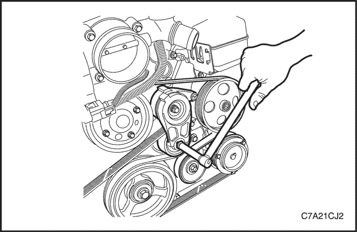
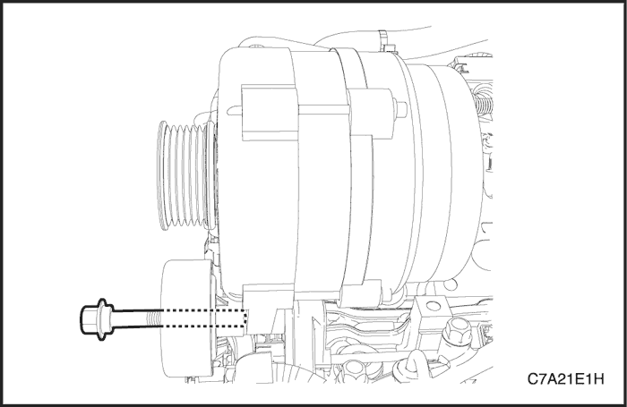

MANTENIMIENTO Y REPARACIÓN
SERVICIO EN VEHÍCULO


Cubierta embellecedora del motor
Procedimiento de desmontaje
- Afloje la abrazadera y desconecte del conjunto del sensor de flujo de aire másico (MAF) el conducto flexible de admisión de aire.

- Afloje la abrazadera y desconecte del conjunto del cuerpo del acelerador el conducto de admisión de aire.
- Desenganche el clip y desconecte del conducto de admisión de aire el manguito de ventilación de gases del cárter motor (PCV).
- Desmonte el conjunto del conducto de admisión de aire.
- Quite las tuercas y tornillos de fijación de la cubierta embellecedora del motor.
- Retire la cubierta embellecedora del motor.
procedimiento de montaje
- Coloque la cubierta embellecedora del motor.
Apretar
Apriete las tuercas y tornillos de fijación de la cubierta embellecedora del motor hasta 8 N•m (71 lb-pulg.).
- Monte el conjunto del conducto de admisión de aire.
- Apriete las abrazaderas flojas.

Conjunto del filtro de aire
Procedimiento de desmontaje
- Desconecte el cable negativo de la batería.
- Desenchufe el conector del sensor de flujo de aire másico (MAF).
- Afloje la abrazadera y desconecte del conjunto del cuerpo del sensor de MAF el conducto flexible de admisión de aire.

- Quite los tornillos de la carcasa del filtro del aire.
- Desenganche la carcasa del espárrago de bola y desmonte el conjunto del filtro de aire.
procedimiento de montaje
- Monte la carcasa inferior del filtro del aire en el espárrago de rótula.
- Ponga los tornillos de la carcasa del filtro del aire.
Apretar
Apriete el tornillo de fijación de la carcasa del filtro del aire hasta 6•m (53 lb-pulg.).
- Monte el conjunto del conducto de admisión de aire.
- Apriete las abrazaderas flojas.
Elemento del filtro del aire
Procedimiento de desmontaje
- Afloje la abrazadera y desconecte el manguito de salida del filtro de aire de la carcasa del filtro de aire.
- Quite los tornillos de la tapa del elemento del filtro de aire.
- Desmonte el elemento de filtro del aire.
procedimiento de montaje
- Instale la tapa del elemento del filtro de aire.
- Apriete los tornillos de la tapa del elemento del filtro de aire.
Apretar
Apriete los tornillos de la tapa del elemento del filtro del aire hasta 2 N•m (18 lb-pulg.).
Correa de accionamiento de los accesorios
Procedimiento de desmontaje
- Retire la cubierta embellecedora del motor. Consulte el apartado "Cubierta embellecedora del motor" en esta sección.
- Desmonte el conjunto de filtro del aire. Consulte "Conjunto del filtro de aire" de esta sección.
- Desmonte el neumático delantero derecho.
- Desmonte la chapa protectora.

- Gire el tensor de la correa de accionamiento de los accesorios en el sentido de las agujas del reloj para reducir la tensión de la correa.
- Al tiempo que sujeta el tensor en la posición de tensión reducida, desconecte la correa.
- Desmonte el conjunto de fijación del motor. Consulte "Conjunto de fijación del motor" de esta sección.
- Quite los tornillos de retención del soporte de apoyo de la fijación del motor.
- Mueva hacia arriba el soporte de apoyo de la fijación del motor para desmontarlo.
- Desmonte la correa de accionamiento de los accesorios.
procedimiento de montaje
- Coloque la correa de accionamiento de los accesorios.
- Monte el soporte de apoyo de la fijación del motor.
Apretar
- Apriete los tornillos de fijación superiores del soporte de apoyo de la fijación del motor hasta 90 N•m (66 lb-pie).
- Apriete el tornillo de fijación inferior del soporte de apoyo de la fijación del motor hasta 50 N•m (37 lb-pie).
- Coloque el soporte de fijación del motor. Consulte "Conjunto de fijación del motor" de esta sección.
- Gire el tensor de la correa de accionamiento de los accesorios en sentido de las agujas del reloj.
- Al tiempo que sujeta el tensor en la posición de tensión reducida, coloque la correa.
- Monte la placa guardabarros.
- Monte el neumático delantero derecho.
- Monte el conjunto del filtro de aire. Consulte "Conjunto del filtro de aire" de esta sección.
- Coloque la cubierta embellecedora del motor. Consulte el apartado "Cubierta embellecedora del motor" en esta sección.
Polea loca de la correa de accionamiento de accesorios
Procedimiento de desmontaje
- Retire la cubierta embellecedora del motor. Consulte el apartado "Cubierta embellecedora del motor" en esta sección.
- Desmonte el conjunto de filtro del aire. Consulte la Sección 1C2, "Mecánica del motor - HFV6 3.2L".
- Gire el tensor de la correa de accionamiento de los accesorios en el sentido de las agujas del reloj para reducir la tensión de la correa.
- Al tiempo que sujeta el tensor en la posición de tensión reducida, desconecte la correa.

- Afloje el tornillo pasante que une la polea loca de la correa de accionamiento de los accesorios al alternador.
- Sujete con cuidado el alternador y quite sus tornillos de fijación superiores para que resulte más fácil quitar el perno pasante.
- Quite el tornillo pasante que une la polea loca de la correa de accionamiento de los accesorios al alternador.
- Desmonte la polea loca de la correa de accionamiento de los accesorios.
procedimiento de montaje
- Sujete con cuidado el alternador y monte la polea loca de la correa de accionamiento de los accesorios.
Apretar
Apriete el tornillo pasante que une la polea loca de la correa de accionamiento de los accesorios al alternador hasta 50 N•m (37 lb-pie).
- Coloque los tornillos de fijación superiores del alternador.
Apretar
Apriete el tornillo de fijación superior del alternador hasta 58 N•m (43 lb-pie).
- Gire el tensor de la correa de accionamiento de los accesorios en sentido de las agujas del reloj.
- Al tiempo que sujeta el tensor en la posición de tensión reducida, coloque la correa.
- Monte el conjunto del filtro de aire. Consulte la Sección 1C2, "Mecánica del motor - HFV6 3.2L".
- Coloque la cubierta embellecedora del motor. Consulte la Sección 1C2, "Mecánica del motor - HFV6 3.2L".
Conjunto de tensor de la correa de accionamiento de los accesorios
Procedimiento de desmontaje
- Desmonte la correa de accionamiento de los accesorios. Consulte el apartado "Correa de accionamiento de los accesorios" de esta sección.
- Desmonte el tensor de la correa de accionamiento de los accesorios.
- Desconecte el manguito del respiradero y el manguito de PCV de la tapa de la culata.
Nota: La polea del tensor de la correa de accionamiento de los accesorios no se puede reparar por separado. Si la polea está defectuosa, debe sustituirse el conjunto del tensor entero.
Precaución: Bajo ninguna circunstancia debe intentarse reparar la polea si está dañada.
procedimiento de montaje
- Monte el conjunto del tensor de la correa de accionamiento de los accesorios (1).
- Coloque los tornillos del tensor de la correa de accionamiento de los accesorios (2).
Apretar
Apriete los tornillos de fijación del tensor de la correa de accionamiento de los accesorios hasta 50 N•m (37 lb-pie).
Colector de admisión superior
Nota: El conjunto de admisión consta de una parte superior y otra inferior. Algunos procedimientos de servicio sólo requieren el desmontaje del colector de admisión superior (p. ej., para reparar un inyector de combustible/bujía), mientras que otros procedimientos precisan el desmontaje de todo el colector, tanto de la parte superior como inferior (ej., culata/s). Si hubiera que desmontar el conjunto entero, consulte el apartado "Conjunto de colector de admisión" en esta sección. Procedimiento de desmontaje
- Desconecte el cable negativo de la batería.
- Retire la cubierta embellecedora del motor. Consulte el apartado "Cubierta embellecedora del motor" en esta sección.
Precaución: Al desenchufar el conector del cableado del cuerpo del acelerador hay que tener en cuenta las siguientes precauciones:
- No use ningún dispositivo mecánico, como, por ejemplo, un destornillador, para separar el conector del cableado (1) del cuerpo del acelerador (2).
- Al replegar el bloqueo (3) del conector del cableado del acelerador, tenga cuidado de no desenganchar dicho bloqueo del conector.
- No tire de los cables del conector.
- Repliegue el bloqueo del conector del cuerpo del acelerador (3).
- Al presionar el cierre del conector en la dirección indicada por la flecha (4), desenchufe el conector del cableado del cuerpo del acelerador.
- Desconecte el manguito (1) de ventilación de gases del cárter motor (PCV) y el manguito de vacío (2) de purga del sistema de emisiones de vapor (EVAP).
- Quite los tornillos de retención (3) de la lumbrera de salida de agua al soporte del tubo del vaso de compensación.
- Quite el tornillo de retención (4) del soporte del solenoide de purga del sistema de emisiones de vapor (EVAP).
- Desenchufe el conector del cableado del solenoide de control de ajuste del colector de admisión (IMTC).
- Desmonte el soporte de fijación del cableado del motor.
- Retire todas las piezas necesarias del conjunto del colector de admisión superior.
Precaución: Una vez desmontado el colector de admisión, tape cada una de las aberturas de las canalizaciones de admisión con un paño que no suelte pelusa para impedir la entrada de sustancias extrañas en el motor.
- Quite los cuatro tornillos largos (3) y los dos tornillos cortos (2) que sujetan el colector de admisión superior (1) a las culatas y al colector de admisión inferior.
Precaución: No vuelva a usar las juntas que hay entre el colector de admisión superior e inferior.
- Levante y separe el colector de admisión superior de su mitad inferior y, a continuación, desmóntelo del motor.
- Quite y deseche las juntas (4) que hay entre el colector de admisión superior e inferior.
- Desmonte el solenoide de IMTC (5) y el conjunto del cuerpo del acelerador (6) si fuera necesario.
Limpiar
Precaución: Debido a la aleación de aluminio con la que está fabricado el colector de admisión, no deben utilizarse cepillos de alambre ni rascadores de acero durante el proceso de limpieza, ya que se podrían dañar las superficies de estanqueidad. Es preferible usar un rascador de madera o plástico.
- Limpie las superficies de acoplamiento asegurándose de eliminar todo el material de junta.
- Limpie el colector con un disolvente adecuado.
- Seque los componentes de la distribución con aire comprimido.
Inspección
- Revise el colector de admisión y compruebe si se dan las siguientes anomalías:
- Superficies de acoplamiento y de estanqueidad dañadas.
- Junta de colector de admisión inferior dañada.
- Daños o excesivos residuos en los orificios roscados y pasantes.
- Grietas o daños en el cuerpo del colector de admisión.
- Coloque una regla (1) en la superficie de estanqueidad del colector de escape superior (2).
- Use una galga (3) para medir la holgura entre el colector de escape y la regla.
- Si la holgura entre la superficie de estanqueidad del colector de admisión superior y la regla sobrepasa el alabeo máximo especificado, sustituya el colector.
- Alabeo máximo del colector superior: 0,05 mm.
- Coloque una regla (1) en la superficie de estanqueidad del colector de escape inferior (2).
- Use una galga (3) para medir la holgura entre el colector de escape y la regla.
- Si la holgura entre la superficie de estanqueidad del colector de admisión inferior y la regla sobrepasa el alabeo máximo especificado, sustituya el colector.
- Alabeo máximo del colector inferior: 0,05 mm.
procedimiento de montaje
- Para el montaje, siga el mismo procedimiento que para el desmontaje pero en orden inverso y teniendo en cuenta lo siguiente:
- Entre los colectores de admisión superior e inferior sólo deben ponerse juntas nuevas.
Precaución: Apriete los tornillos del colector de admisión siguiendo un patrón circular y empezando desde el tornillo central hacia afuera.
- Monte el colector de admisión superior.
Apretar
Apriete los tornillos de fijación del colector de admisión superior al colector de admisión inferior hasta 23 N•m (17 lb-pie).
- Enchufe el conector del IMTC.
- Enchufe el conector del cuerpo del acelerador.
- Coloque el tornillo de retención (4) del soporte del solenoide de purga del sistema de emisiones de vapor (EVAP).
- Coloque los tornillos de retención (3) de la lumbrera de salida de agua al soporte del tubo del vaso de compensación.
- Conecte el manguito de vacío (2) del sistema de emisiones de vapor (EVAP) y el manguito de PCV (1) al colector de admisión superior.
- Monte el soporte de fijación del cableado del motor.
Conjunto de colector de admisión
Nota: El conjunto de admisión consta de una parte superior y otra inferior. Algunos procedimientos de servicio sólo requieren el desmontaje del colector de admisión superior (p. ej., para reparar un inyector de combustible/bujía), mientras que otros procedimientos precisan el desmontaje de todo el colector, tanto de la parte superior como inferior (ej., culata/s). Si sólo hubiera que desmontar el colector de admisión superior, consulte el apartado "Colector de admisión superior" en esta sección. Procedimiento de desmontaje
- Despresurice el sistema de combustible. Consulte la Sección 1F3, Controles del motor - HFV6 3.2L.
- Desconecte el cable negativo de la batería.
- Desmonte el conducto de admisión de aire.
- Retire la cubierta embellecedora del motor. Consulte el apartado "Cubierta embellecedora del motor" en esta sección.
Precaución: Al desenchufar el conector del cableado del cuerpo del acelerador hay que tener en cuenta las siguientes precauciones:
- No use ningún dispositivo mecánico, como, por ejemplo, un destornillador, para separar el conector del cableado (1) del cuerpo del acelerador (2).
- Al replegar el bloqueo (3) del conector del cableado del acelerador, tenga cuidado de no desenganchar dicho bloqueo del conector.
- No tire de los cables del conector.
- Repliegue el bloqueo del conector del cuerpo del acelerador (3).
- Al presionar el cierre del conector en la dirección indicada por la flecha (4), desenchufe el conector del cableado del cuerpo del acelerador.
- Desconecte el manguito (1) de ventilación de gases del cárter motor (PCV) y el manguito de vacío (2) de purga del sistema de emisiones de vapor (EVAP).
- Quite los tornillos de retención (3) de la lumbrera de salida de agua al soporte del tubo del vaso de compensación.
- Quite el tornillo de retención (4) del soporte del solenoide de purga del sistema de emisiones de vapor (EVAP).
- Desenchufe el conector del cableado del solenoide de control de ajuste del colector de admisión (IMTC).
- Desmonte el soporte de fijación del cableado del motor.
- Retire todas las piezas necesarias del conjunto del colector de admisión superior.

Precaución: Tape la abertura del manguito de alimentación de combustible tras desmontarlo para impedir que entren suciedad u otras sustancias contaminantes en el sistema de combustible.
- Desconecte la tubería de alimentación de combustible de la rampa de inyectores.
- Desenchufe el conector del cableado (2) de la válvula del sistema de emisiones de vapor (EVAP) (1).
- Retire el acoplamiento rápido (3) de la parte trasera de la válvula del EVAP del siguiente modo:
- a. Presione juntas las dos orejetas dentadas, empuje el acoplamiento rápido en la válvula y tire hacia afuera para separar la conexión.
- b. Tape los dos extremos para impedir que entren sustancias extrañas.

- Quite los cuatro tornillos largos (1) que sujetan todo el colector de admisión a las culatas.
Precaución: No afloje ni quite los tornillos más cortos (X) que sujetan el colector de escape superior al inferior.
- Quite los dos tornillos cortos (2) que sujetan el colector de admisión inferior a las culatas.
Precaución: Una vez desmontado el colector de admisión, tape cada una de las aberturas de las aberturas de admisión de las culatas con un paño que no suelte pelusa para impedir la entrada de sustancias extrañas en las lumbreras de admisión.
- Desmonte del motor el conjunto de colector de admisión superior e inferior.
- Quite la junta entre el colector de admisión inferior y la culata.
- Quite los tornillos que sujetan el colector de admisión superior al colector de admisión inferior.
- Retire el colector de admisión superior del colector de admisión inferior.
Precaución: No vuelva a usar las juntas que hay entre el colector de admisión superior e inferior.
- Quite y deseche las juntas que hay entre el colector de admisión superior e inferior.
Precaución: Al desmontar el conjunto de inyectores y de rampa de inyectores (1) hay que tener en cuenta las siguientes precauciones:
- a. Hay que tener cuidado al desmontar el conjunto de inyectores y de rampa de inyectores para no dañar las toberas pulverizadoras ni los terminales del conector del cableado de los inyectores.
- b. Sujete el conjunto de inyectores y de rampa de inyectores tras el desmontaje.
- c. Tape todas las aberturas de tuberías y del colector tras el desmontaje para impedir que entren suciedad u otras sustancias contaminantes en el sistema de combustible.
- Desmonte el conjunto de inyectores y de rampa de inyectores si fuera necesario. Consulte la Sección 1F3, Controles del motor - HFV6 3.2L.
Limpiar
Precaución: Debido a la aleación de aluminio con la que está fabricado el colector de admisión, no deben utilizarse cepillos de alambre ni rascadores de acero durante el proceso de limpieza, ya que se podrían dañar las superficies de estanqueidad. Es preferible usar un rascador de madera o plástico.
- Limpie las superficies de acoplamiento asegurándose de eliminar todo el material de junta.
- Limpie el colector con un disolvente adecuado.
- Seque los componentes de la distribución con aire comprimido.
Inspección
- Revise el colector de admisión y compruebe si se dan las siguientes anomalías:
- Superficies de acoplamiento y de estanqueidad dañadas.
- Junta de colector de admisión inferior dañada.
- Daños o excesivos residuos en los orificios roscados y pasantes.
- Grietas o daños en el cuerpo del colector de admisión.
- Coloque una regla (1) en la superficie de estanqueidad del colector de escape superior (2).
- Use una galga (3) para medir la holgura entre el colector de escape y la regla.
- Si la holgura entre la superficie de estanqueidad del colector de admisión superior y la regla sobrepasa el alabeo máximo especificado, sustituya el colector.
- Alabeo máximo del colector superior: 0,05 mm.
- Coloque una regla (1) en la superficie de estanqueidad del colector de escape inferior (2).
- Use una galga (3) para medir la holgura entre el colector de escape y la regla.
- Si la holgura entre la superficie de estanqueidad del colector de admisión inferior y la regla sobrepasa el alabeo máximo especificado, sustituya el colector.
- Alabeo máximo del colector inferior: 0,05 mm.
procedimiento de montaje
- Monte el conjunto de inyectores y de rampa de inyectores si fuera necesario. Consulte la Sección 1F3, "Controles del motor - HFV6 3.2L".
- Monte el colector de admisión inferior en la culata.
Apretar
Apriete los tornillos de fijación del colector de admisión inferior a la culata hasta 23 N•m (17 lb-pie).
- Monte el colector de admisión superior en el colector de admisión inferior y la culata.
Apretar
- Apriete los tornillos de fijación del colector de admisión superior al colector de admisión inferior hasta 23 N•m (17 lb-pie).
- Apriete los tornillos de fijación del colector de admisión superior a la culata hasta 23 N•m (17 lb-pie).
- Enchufe el conector del inyector de combustible.
- Conecte la tubería de alimentación de combustible a la rampa de inyectores.
- Enchufe el conector de la válvula de solenoide del cartucho de purga del sistema de emisiones de vapor (EVAP) y conecte el acoplamiento rápido.
- Enchufe el conector del IMTC.
- Enchufe el conector del cuerpo del acelerador.
- Coloque el tornillo de retención del soporte del solenoide de purga del sistema de emisiones de vapor (EVAP).
- Coloque los tornillos de retención de la lumbrera de salida de agua al soporte del tubo del vaso de compensación.
- Conecte el manguito de vacío del sistema de emisiones de vapor (EVAP) y el manguito de PCV al colector de admisión superior.
Conjunto del colector de escape
Procedimiento de desmontaje
- Desconecte el cable negativo de la batería.
- Desmonte el tubo de escape delantero. Consulte la Sección 1G3, Sistema de escape del motor - HFV6 3.2L.
- Desmonte el convertidor de minioxidación. Consulte la Sección 1G3, Sistema de escape del motor - HFV6 3.2L.
- En el caso del colector de escape del banco 1, desmonte la caja de transferencia. Consulte la Sección 5D, Caja de transferencia.
- En el caso del colector de escape del banco 1, desmonte el conjunto de fijación trasera de la caja de cambios. Consulte el apartado "Conjunto de fijación trasera de la caja de cambios" de esta sección.
- Desenchufe el conector de la sonda lambda calentada superior.
- Quite los tres tornillos (1) que sujetan el escudo térmico exterior (2) al colector de escape.

- Afloje progresivamente los siete tornillos de fijación del colector de escape, de fuera al centro, y luego quite los tornillos.
- Quite y deseche la junta entre el colector de escape y la culata.
- Quite los tres tornillos que sujetan el escudo térmico interior en el colector de escape, si fuera necesario.
Limpiar
- Limpie a fondo el colector de escape con la ayuda de un disolvente de limpieza no corrosivo adecuado y disponible en comercios.
- Seque el colector de escape con aire comprimido.
Inspección
- Revise el colector de escape (1) y compruebe si se da lo siguiente:
- Daño en los orificios roscados de la fijación del escudo térmico.
- Daño en los taladros de fijación del colector de escape.
- Daño en las roscas de los espárragos de la brida que une el colector de escape al tubo de escape.
- Daño en las superficies de estanqueidad de la junta.
- Use una regla (2) y galgas (3) para comprobar que la cara de fijación de la culata del colector de escape no supere la especificación de distorsión máxima de 0,25 mm.
Nota: Si la planitud de la superficie no está dentro de las especificaciones, el colector de escape está alabeado y debe sustituirse.
procedimiento de montaje
- Monte el escudo térmico interior en el colector de escape si fuera necesario.
Apretar
Apriete el tornillo de fijación del escudo térmico interior del colector de escape hasta 10 N•m (89 lb-pulg.).
- Ponga una junta nueva en el colector de escape.
- Ponga sellante para roscas Loctite 272 (o equivalente) en las roscas de los tornillos de fijación del colector de escape.
Nota: Cuando apriete los tornillos de fijación del colector de escape a la culata, empiece por los tornillos del centro y luego alterne de lado a lado los tornillos exteriores.
- Mueva el colector de escape hasta dejarlo en su sitio y coloque los tornillos de fijación del colector de escape.
Apretar
Apriete los tornillos de fijación del colector de escape a la culata hasta 20 N•m (15 lb-pie).
- Monte el escudo térmico del colector de escape.
Apretar
Apriete los tornillos del escudo térmico exterior del colector de escape hasta 10 N•m (89 lb-pulg.).
- Monte las otras piezas que se quitaron con anterioridad.
Tapa de la culata
Procedimiento de desmontaje
- Retire la cubierta embellecedora del motor. Consulte el apartado "Cubierta embellecedora del motor" en esta sección.
- Desmonte el colector de admisión superior. Consulte el apartado "Colector de admisión superior" de esta sección.
- Quite el tornillo (1) que sujeta el conector a masa (2) a la culata (banco 1: 2 sitios; banco 2: 1 sitio).
- En el caso del banco 2, desenchufe el conector del cableado sensor (3) de temperatura de refrigerante del motor (ECT).
- Quite las orejetas de retención del cableado del motor del lado de las tapas de las culatas.
- Desenchufe los conectores del cableado del sensor (1) de posición del árbol de levas (CMP).
- Desenchufe los conectores del cableado del solenoide del actuador de posición de árbol de levas (2).
- Quite la orejeta de retención (3) del cableado del motor de la parte delantera de la tapa de culata.
- Desmonte los conjuntos de bobina de encendido. Consulte la Sección 1F3, Controles del motor - HFV6 3.2L.
- Aparte el cableado del motor de las tapas de las culatas.
- Quite del conjunto de la culata el tornillo que sujeta el soporte de sustentación del motor.
- Quite de la culata (3) el tornillo (1), 13 sitios, que sujeta la tapa de la culata (2).
- Quite la culata y deseche el retén.
- Instale la herramienta nº EN-46101 (1) en los tubos de las bujías de la culata para impedir que entre suciedad en la cámara de combustión.
Limpieza e inspección
- Limpie la tapa de la culata con disolvente de limpieza adecuado y séquela con aire comprimido.
- Inspeccione la tapa en busca de grietas y distorsión.
- Compruebe si los retenes de los tubos de las bujías están dañados.
- Sustituya la tapa de la culata si está dañada de algún modo que afecte a su función de sellar e impedir la entrada de suciedad.
procedimiento de montaje
- El procedimiento de montaje debe ser el mismo que el procedimiento de desmontaje, pero en orden inverso.
- Si no se ha puesto ya, instale la herramienta EN-46101 (1) en los tubos las bujías de la culata.
- Asegúrese de que el pasacables (1), 13 sitios, esté bien acoplado en su orificio.
- Limpie la superficie de estanqueidad de la tapa de la culata con un paño limpio que no suelte pelusa.
- Asegúrese de que se pone un retén nuevo correctamente en la tapa de la culata. Ponga sellante de endurecimiento a temperatura ambiente (RTV) en la línea de la junta de la tapa delantera del motor (1).
- Coloque la tapa de la culata (1) en su sitio sobre la culata (2).
- Ponga el tornillo (1) de la tapa de la culata siguiendo la secuencia indicada.
Apretar
Apriete el tornillo de fijación de la tapa de la culata hasta 10 N•m (89 lb-pulg.).
- Retire la herramienta EN-46101 (1).
- Apriete todos los demás elementos de sujeción.
Apretar
- Apriete el tornillo del conector a masa del motor hasta 10 N•m (89 lb-pulg.).
- Apriete los tornillos de retención del soporte de sustentación del motor hasta 50 N•m (37 lb-pie).
- Enchufe todos los demás conectores.
Polea del cigüeñal
Procedimiento de desmontaje
- Gire el tensor de la correa de accionamiento de los accesorios en el sentido de las agujas del reloj para reducir la tensión de la correa.
- Al tiempo que sujeta el tensor en la posición de tensión reducida, desconecte la correa.
- Desmonte el motor de arranque. Consulte la Sección 1E3, Sistema eléctrico del motor - HFV6 3.2L.
- Monte la herramienta nº EN-46106 (1) en la abertura del motor de arranque para evitar que gire el árbol de levas.
- Quite el tornillo (1) que sujeta el conjunto de la polea del cigüeñal (2) al cigüeñal.
- Desmonte el conjunto de la polea del cigüeñal (1) del cigüeñal con ayuda del extractor de tres patas, herramienta nº J-41816 (2), o equivalente.
- Use una herramienta de punta plana (2) para desmontar con cuidado de la tapa delantera el retén delantero (1) del cigüeñal.
Limpieza e inspección
- Utilice un cepillo de cerdas suaves para limpieza de piezas y un disolvente limpiador no corrosivo adecuado para limpiar el conjunto de la polea del cigüeñal.
- Seque el conjunto de la polea del cigüeñal con aire comprimido.
- Revise el conjunto de la polea del cigüeñal y compruebe si se dan las siguientes anomalías:
- Daño o desgaste en la superficie interior entre el cubo y el cigüeñal.
- Desgaste, fisuras o rayado en la superficie de estanqueidad.
- Desgaste, rotura y deterioro general en el anillo de goma entre el cubo y la polea.
- Daño en las nervaduras de la correa de accionamiento de la polea.
procedimiento de montaje
Precaución: No lubrique las superficies de estanqueidad de la polea del cigüeñal ni el retén de aceite delantero del cigüeñal. La polea del cigüeñal debe montarse sobre un retén seco.
- Utilice el instalador de retén delantero del cigüeñal, nº herramienta J-29184 (2) y un martillo adecuado para montar un retén delantero (1) nuevo de forma que quede totalmente acoplado en el alojamiento de la tapa delantera.
- Lubrique el interior del cubo del conjunto de la polea del cigüeñal.
- Monte parcialmente el conjunto de la polea en el cigüeñal.
Precaución: Para evitar daños en las roscas del cigüeñal, monte completamente el instalador de la polea del cigüeñal, nº herramienta J-41998-B (1), en el cigüeñal antes de presionar el conjunto del equilibrador y la polea.
- Use el instalador de la polea, herramienta nº J-41998-B (1), para montar completamente el conjunto de la polea en el cigüeñal.
- Ponga Loctite 272 o equivalente en la rosca del nuevo tornillo de retención (1) del conjunto de la polea del cigüeñal.
- Coloque el tornillo de retención del conjunto de la polea del cigüeñal.
Apretar
Apriete el tornillo de retención del conjunto de la polea del cigüeñal hasta 100 N•m (74 lb-pie) y gire el tornillo otros 150° utilizando el medidor de par angular KM-470-B.
- Monte el motor de arranque. Consulte la Sección 1E3, Sistema eléctrico del motor - HFV6 3.2L.
- Monte la correa de accionamiento de los accesorios.
Conjunto de la tapa delantera
Procedimiento de desmontaje
- Desmonte el conjunto del motor. Consulte el apartado "Conjunto del motor" de esta sección.
- Quite las tapas de las culatas. Consulte el apartado "Tapa de la culata" en esta sección.
- Desmonte el conjunto de la polea del cigüeñal. Consulte el apartado "Polea del cigüeñal" de esta sección.
- Desmonte los sensores de posición y las válvulas de solenoide de los actuadores de posición de los árboles de levas. Consulte la Sección 1F3, Controles del motor - HFV6 3.2L.
- Quite el tornillo (2), 22 sitios, que sujeta el conjunto de la tapa delantera (1).
Precaución: Utilice solamente los puntos de apoyo y un gato de tornillo en el orificio para quitar la tapa delantera del motor.
- Coloque sin apretar un tornillo adecuado en el orificio del gato de tornillo (1).
- Corte el sellante de endurecimiento a temperatura ambiente (RTV) usando los puntos de apoyo (2) situados en el borde de la tapa delantera y el gato de tornillo.
- Desmonte el conjunto de la tapa delantera (1).
Desmontaje
- Quite el retén de aceite delantero del cigüeñal (1) de la tapa delantera del motor (2) con la ayuda de una herramienta de punta plana. Deseche los retenes.
- Quite de la tapa delantera del motor (2) los retenes de aceite (1) de las válvulas de los actuadores de posición de los árboles de levas y deséchelos.
- Quite de la tapa delantera del motor (2) la junta estanca (1) de la bomba de refrigerante y deséchela.
Limpiar
Precaución: Para limpiar las superficies de estanqueidad, no use un rascador de juntas afilado ni metálico.
- Elimine todo el sellante RTV (1) de la tapa delantera del motor con un rascador de madera o de plástico.
- Limpie todos los residuos de los taladros de los tornillos.
- Limpie la tapa delantera con un disolvente de limpieza adecuado.
- Seque la tapa delantera con aire comprimido.
Inspección
- Inspeccione los dos lados de la tapa delantera del motor en busca de las siguientes anomalías:
- Daño en el interior de los retenes de aceite de las válvulas de los actuadores de posición de los árboles de levas (1).
- Daño en los taladros de los tornillos (2).
- Daño y/o corrosión en todo el conducto de refrigerante del motor (3).
- Exterior (4) mellado o dañado.
- Daño en el interior del retén de aceite delantero (5) del cigüeñal.
- Surcos o daño en las superficies de estanqueidad de la bomba de refrigerante (6).
- Daño en las roscas de los taladros de los tornillos de la bomba del refrigerante (7).
- Repare o sustituya la tapa delantera, según sea necesario.
Montaje
Precaución: No lubrique las superficies de estanqueidad de la polea del cigüeñal ni el retén de aceite delantero del cigüeñal. La polea del cigüeñal se monta en un retén seco.
- Coloque un nuevo retén de aceite delantero de cigüeñal (1) en la tapa delantera (2) usando el instalador de retén delantero, herramienta nº J-29184 (3), y un martillo adecuado.

- Coloque un nuevo retén de aceite para la válvula del actuador de posición de árbol de levas (1) en la tapa delantera (2) usando la herramienta nº EN-46103 (3) y un martillo adecuado.
procedimiento de montaje
- Coloque los pasadores guía, herramienta nº EN-46109 (1), en el bloque del motor, dos lugares.
- Coloque una tapa delantera de motor nueva al retén del bloque de cilindros (1).
- Ponga sellante de endurecimiento a temperatura ambiente (RTV) (1) en la tapa delantera.
- Sitúe la tapa delantera sobre las herramientas especiales y colóquela en su sitio.
- Retire las herramientas especiales del bloque de cilindros.
- Apriete los tornillos de la tapa delantera del motor en la secuencia indicada.
Apretar
Apriete los tornillos de la tapa delantera del motor hasta 23 N•m (17 lb-pie).
- Monte las demás piezas que se quitaron con anterioridad.
- Monte el conjunto del motor. Consulte el apartado "Conjunto del motor" de esta sección.
Componentes de cadenas de distribución
Precaución: Hay que ajustar la distribución del árbol de levas siempre que el sistema de accionamiento del mismo se vea alterado y se pierda la relación entre cadena y rueda dentada. Aunque sólo se vea afectada una rueda dentada, los múltiples giros del cigüeñal no producirán condiciones en las que pueda confirmarse una distribución adecuada. Si hace falta, siga el procedimiento de montaje de la cadena de distribución secundaria del banco 2 para restablecer la distribución de los árboles de levas.
Montaje de cadena de distribución primaria y secundaria de banco 2
- Marca de puesta a punto de actuador de posición del árbol de levas de admisión - Banco 2
- Eslabón plaqueado brillante de cadena de distribución secundaria - Banco 2
- Marca de puesta a punto de actuador de posición del árbol de levas de escape - Banco 2
- Cadena de distribución secundaria - Banco 2
- Cadena de distribución primaria
- Marca de puesta a punto de rueda dentada intermedia de eje de accionamiento de árbol de levas - Banco 2
- Rueda dentada intermedia de eje de accionamiento de árbol de levas - Banco 2
- Eslabón plaqueado brillante de cadena de distribución primaria
- Marca de puesta a punto de rueda dentada intermedia de eje de accionamiento de árbol de levas - Banco 2
- Rueda dentada intermedia de eje de accionamiento de árbol de levas - Banco 1
- Rueda dentada de cigüeñal
- Marca de puesta a punto de rueda dentada de cigüeñal
Montaje de cadena de distribución secundaria de banco 1
- Marca de puesta a punto de actuador de posición del árbol de levas de admisión - Banco 2
- Eslabón plaqueado brillante de cadena de distribución secundaria - Banco 2
- Marca de puesta a punto de actuador de posición del árbol de levas de escape - Banco 2
- Cadena de distribución secundaria - Banco 2
- Cadena de distribución primaria
- Marca de puesta a punto de rueda dentada intermedia de la cadena de accionamiento de árbol de levas - Banco 2
- Rueda dentada intermedia de cadena de accionamiento de árbol de levas - Banco 2
- Eslabón plaqueado brillante de cadena de distribución primaria
- Marca de puesta a punto de rueda dentada intermedia de la cadena de accionamiento de árbol de levas - Banco 2
- Rueda dentada intermedia de cadena de accionamiento de árbol de levas - Banco 1
- Rueda dentada de cigüeñal
- Marca de puesta a punto de rueda dentada de cigüeñal
- Eslabón plaqueado brillante de cadena de distribución secundaria - Banco 1
- Cadena de accionamiento intermedia de árbol de levas - Banco 1
- Marca de puesta a punto de actuador de posición del árbol de levas de escape - Banco 1
- Marca de puesta a punto de actuador de posición del árbol de levas de admisión - Banco 1
Procedimiento de desmontaje
Cadena de distribución secundaria de banco 1
Precaución: Una vez desmontado el colector de admisión y las bujías, tape cualquier abertura para impedir que entren suciedad y otras sustancias contaminantes.
- Desmonte el conjunto de la tapa delantera del motor. Consulte el apartado "Conjunto de la tapa delantera" de esta sección.
- Desmonte las bujías para facilitar el giro del cigüeñal o del motor.
- Instale la herramienta nº EN-46111 (1) en el cigüeñal (2).
- Use la herramienta nº EN-46111 (1) para girar el cigüeñal en sentido de las agujas del reloj hasta que la marca de puesta a punto de la rueda dentada de cigüeñal (2) quede alineada con la marca de referencia (3) del alojamiento de la bomba de la bomba de aceite.
- Tras alinear la marca de puesta a punto de la rueda dentada de cigüeñal, compruebe que las caras planas de los árboles de levas (1) en la parte trasera de la culata del banco 1 estén paralelas con la rampa de la tapa de la culata (2).
- Si las caras planas de los árboles de levas no están como se indica, gire el cigüeñal 360°.
- Instale la herramienta nº EN-46105-1 (1) en la parte trasera de los árboles de levas en culata del banco 1 (2).
- Instale la herramienta nº EN-46105-2 (1) en la parte trasera de los árboles de levas en culata del banco 2 (2).
- Quite los tornillos (1) del tensor de la cadena de distribución secundaria del banco 1 y desmonte el tensor (2).
Nota: Tenga cuidado al quitar los tornillos del tensor. El émbolo del tensor está sometido a tensión por resorte y puede saltar al desmontar el tensor.
- Retire la junta (1) del tensor (2) y deséchela.
- Inspeccione la superficie de fijación del tensor en la culata del banco 1 en busca de rebabas o defectos que pudieran afectar a la estanqueidad de una junta de tensor nueva.
- Quite el tornillo (1) de la zapata de la cadena de distribución secundaria del banco 1.
- Desmonte la zapata (1) de la cadena de distribución secundaria del banco 1.
- Quite los dos tornillos (1) de la guía de la cadena de distribución secundaria del banco 1 y desmonte la guía (2).
- Desmonte la cadena de distribución secundaria del banco 1 (1) de los actuadores de posición de los árboles de levas (2) y de la rueda dentada intermedia del eje de accionamiento (3).
Cadena de distribución primaria
- Desmonte la cadena de distribución secundaria del banco 1. Consulte el apartado "Componentes de cadenas de distribución" de esta sección.
- Quite los dos tornillos (1) del tensor de la cadena de distribución primaria y desmonte el tensor (2).
Nota: Tenga cuidado al quitar los tornillos del tensor. El émbolo del tensor está sometido a tensión por resorte y puede saltar al desmontar el tensor.
- Quite la junta (1) del tensor (2) y deséchela.
- Inspeccione la superficie de fijación del tensor de la cadena de distribución primaria en el bloque del motor en busca de rebabas o defectos que pudieran afectar a la estanqueidad de una junta de tensor nueva.
- Quite los dos tornillos (1) de la guía superior de la cadena de distribución secundaria y desmonte la guía (2).
Nota: No desmonte la guía inferior de la cadena de distribución primaria (1). Dicha guía no se puede reparar por separado. Si hay que sustituir la guía inferior de la cadena de distribución primaria, deberá sustituirse el conjunto de la bomba de aceite (2).
- Desmonte la cadena de distribución primaria (1).
Nota: Para facilitar el desmontaje, retire la cadena de la rueda dentada de cigüeñal antes de intentar desmontarla de las ruedas dentadas intermedias de eje de accionamiento de árbol de levas.
- Si fuera necesario, quite el tornillo (1) de la rueda dentada intermedia de eje de accionamiento de árbol de levas del banco 1 y desmonte la rueda dentada intermedia (2).
- Si fuera necesario, desmonte la rueda dentada (1) del cigüeñal (2).
Cadena de distribución secundaria de banco 2
- Desmonte la cadena de distribución primaria. Consulte el apartado "Componentes de cadenas de distribución" de esta sección.
- Quite los dos tornillos (1) del tensor de la cadena de distribución secundaria del banco 2 y desmonte el tensor (2).
Nota: Tenga cuidado al quitar los tornillos del tensor. El émbolo del tensor está sometido a tensión por resorte y puede saltar al desmontar el tensor.
- Quite la junta (1) del tensor (2) y deséchela.
- Inspeccione la superficie de fijación del tensor en la culata del banco 2 en busca de rebabas o defectos que pudieran afectar a la estanqueidad de una junta de tensor nueva.
- Quite el tornillo (1) de la zapata de la cadena de distribución secundaria del banco 2.
- Desmonte la zapata (1) de la cadena de distribución secundaria del banco 2.
- Quite el tornillo (1) de la guía de la cadena de distribución secundaria del banco 2 y desmonte la guía (2).
- Desmonte la cadena de distribución secundaria del banco 2 (1) de los actuadores de posición de los árboles de levas (2) y de la rueda dentada intermedia del eje de accionamiento.
- Si fuera necesario, quite el tornillo (1) de la rueda dentada intermedia de eje de accionamiento de árbol de levas del banco 2 y desmonte la rueda dentada (2).
- Retire la herramienta nº EN 46105-2 (1) de los árboles de levas en culata del banco 2 (2).
- Retire la herramienta nº EN 46105-1 (1) de los árboles de levas en culata del banco 1 (2).
Limpiar
- Limpie los siguientes componentes con un disolvente adecuado:
- rueda dentada de cigüeñal,
- cadena de distribución primaria,
- guía de cadena de distribución primaria,
- tensor de cadena de distribución primaria,
- cadenas de distribución secundarias,
- zapatas de cadenas de distribución secundarias,
- guías de cadenas de distribución secundarias,
- tensores de cadenas de distribución secundarias y
- tornillos.
- Seque todos los componentes con aire comprimido.
Inspección
Cadenas de distribución
- Inspeccione las cadenas de distribución primaria y/o secundaria en busca de lo siguiente:
- rodillos desgastados o agarrotados (1),
- eslabones flojos (2) y
- pasadores flojos (3).
- Sustituya convenientemente la cadena de distribución que esté dañada.
Ruedas dentadas de eje de accionamiento intermedio de árbol de levas
- Compruebe lo siguiente en las ruedas dentadas de eje de accionamiento intermedio de árbol de levas:
- Daño en rueda dentada de cadena de distribución primaria y secundaria (1).
- Daño en cojinete de cubo (2). Asegúrese de que el cojinete de cubo gira libremente. Si el cojinete del cubo oscila, hace ruido o se nota irregular al girar, sustituya la rueda dentada intermedia de árbol de levas.
- Daño en la superficie de estanqueidad / asiento de la brida del tornillo (3).
- Daño en la superficie de estanqueidad entre el cubo de cojinete y el bloque del motor.
- Inspeccione los conjuntos de actuadores de posición de los árboles de levas. Consulte el apartado "Conjunto de actuador de posición de árbol de levas" de esta sección.
Ruedas dentadas del cigüeñal
- Revise la rueda dentada de cigüeñal y compruebe si se dan las siguientes anomalías:
- rueda dentada dañada (1),
- daño en el interior (2),
- daño en chavetero (3) y
- daño en material de apoyo (4).
- Sustituya convenientemente la rueda dentada que esté dañada.
Guía superior de la cadena de distribución primaria
- Revise la guía inferior de la cadena de distribución primaria y compruebe si se dan las siguientes anomalías:
- superficie de guía desgastada (1),
- superficie de guía rota o agrietada (2) y
- base de guía rota o agrietada (3).
- Sustituya convenientemente la guía dañada.
Guía inferior de la cadena de distribución primaria
- Revise la guía inferior de la cadena de distribución primaria y compruebe si se dan las siguientes anomalías:
- superficie de guía desgastada (1),
- superficie de guía rota o agrietada (2) y
- base de guía rota o agrietada (3).
Nota: La guía inferior de la cadena de distribución primaria no se repara por separado y forma parte del conjunto de la bomba de aceite.
- Reemplace la guía inferior de la cadena de distribución primaria sustituyendo el conjunto de la bomba de aceite. Consulte el apartado "Conjunto de bomba de aceite" de esta sección.
Tensor de cadena de distribución primaria
- Compruebe si la superficie de la zapata del tensor de cadena de distribución primaria está desgastada (1).
- Compruebe si el eje del tensor está agarrotado o bloqueado (2). Reajuste el émbolo (3) y asegúrese de que el eje del tensor se mueva libremente dentro y fuera del cuerpo del tensor.
Nota: Para reajustar el tensor, use un destornillador de punta plana del tamaño adecuado (4) para girar el émbolo en sentido de las agujas del reloj dentro del eje del tensor.
- Sustituya convenientemente el tensor dañado.

Guía de cadena de distribución secundaria de banco 2
- Revise la guía de la cadena de distribución secundaria del banco 2 y compruebe si se dan las siguientes anomalías:
- superficie de guía desgastada (1),
- superficie de guía rota o agrietada (2) y
- base de guía rota o agrietada (3).
- Sustituya convenientemente la guía dañada. Reajuste el émbolo (3) y asegúrese de que el eje del tensor se mueva libremente dentro y fuera del cuerpo del tensor.
Zapata de cadena de distribución secundaria de banco 2
- Revise la zapata de la cadena de distribución secundaria del banco 2 y compruebe si se dan las siguientes anomalías:
- superficie de zapata desgastada (1),
- superficie de zapata rota o agrietada (2) y
- zapata rota o agrietada (3).
- Compruebe si en la parte trasera de la zapata falta alguna pastilla de contacto (1) del tensor de la cadena de distribución o si hay alguna pastilla dañada o desgastada.
- Sustituya convenientemente la zapata que esté dañada.
Tensor de cadena de distribución secundaria de banco 2
- Compruebe si está dañada la superficie de contacto entre émbolo y zapata (1) del tensor de la cadena de distribución secundaria del banco 2.
- Compruebe si el eje del tensor está agarrotado o bloqueado (2). Reajuste el émbolo (3) y asegúrese de que el eje del tensor se mueva libremente dentro y fuera del cuerpo del tensor.
Nota: Para reajustar el tensor, use un destornillador de punta plana del tamaño adecuado (4) para girar el émbolo en sentido de las agujas del reloj dentro del eje del tensor.
- Sustituya convenientemente el tensor dañado.
Guía de cadena de distribución secundaria de banco 1
- Revise la guía de la cadena de distribución secundaria del banco 1 y compruebe si se dan las siguientes anomalías:
- superficie de guía desgastada (1),
- superficie de guía rota o agrietada (2) y
- base de guía rota o agrietada (3).
- Sustituya convenientemente la guía dañada.
Zapata de cadena de distribución secundaria de banco 1
- Revise la zapata de la cadena de distribución secundaria del banco 1 y compruebe si se dan las siguientes anomalías:
- superficie de zapata desgastada (1),
- superficie de zapata rota o agrietada (2) y
- zapata rota o agrietada (3).
- Compruebe si en la parte trasera de la zapata falta alguna pastilla de contacto (1) del tensor de la cadena de distribución o si hay alguna pastilla dañada o desgastada.
- Sustituya convenientemente la zapata que esté dañada.
Tensor de cadena de distribución secundaria de banco 1
- Compruebe si está dañada la superficie de contacto entre émbolo y zapata (1) del tensor de la cadena de distribución secundaria del banco 1.
Nota: Para reajustar el tensor, use un destornillador de punta plana del tamaño adecuado (4) para girar el émbolo en sentido de las agujas del reloj dentro del eje del tensor.
- Compruebe si el eje del tensor está agarrotado o bloqueado (2). Reajuste el émbolo (3) y asegúrese de que el eje del tensor se mueva libremente dentro y fuera del cuerpo del tensor.
- Sustituya convenientemente el tensor dañado.
procedimiento de montaje
Componentes de las cadenas de distribución del banco 2
- Monte la rueda dentada (1) en el cigüeñal (2) alineando el chavetero con la chaveta del cigüeñal.
- Deslice la rueda dentada sobre el cigüeñal hasta que dicha rueda dentada haga contacto con el escalón del cigüeñal.
Nota: Asegúrese de que al montar la rueda dentada de cigüeñal la marca de puesta a punto (1) queda visible.

Precaución: Para instalar la herramienta nº 46105 en los árboles de levas, gire éstos en sentido contrario a las agujas del reloj. No debería hacer falta girar el árbol de levas más de 45 grados.
- Instale la herramienta nº EN 46105-1 (1) en la parte trasera de los árboles de levas en culata del banco 2 (2) y la herramienta nº EN 46105-2 en los árboles de levas en culata del banco 1.
Precaución: Todos los árboles de levas deben bloquearse en su sitio antes de montar cualquier cadena de distribución.
- Asegúrese de que la herramienta nº EN 46105 está totalmente acoplada en los árboles de levas.
- Use la herramienta nº EN-46111 (1) para girar el cigüeñal en sentido de las agujas del reloj hasta que la marca de puesta a punto de la rueda dentada de cigüeñal (2) quede alineada con la marca de referencia (3) del alojamiento de la bomba de la bomba de aceite.
- Monte la cadena de distribución secundaria del banco 2 (1) alineando la cadena de la siguiente forma:
- A. Enrolle la cadena de distribución secundaria alrededor de las ruedas dentadas de accionamiento de los actuadores del banco 2.
- B. Asegúrese de que hay dos eslabones brillantes situados encima de cada una de las ruedas dentadas de los actuadores de los árboles de levas.
Precaución: Al alinear la cadena de distribución secundaria del banco 2 con las ruedas dentadas de los actuadores de los árboles de levas, asegúrese de usar las marcas de puesta a punto circulares en la rueda dentada y NO la marca triangular.
- C. Alinee el eslabón de plaqueado brillante (1) de la cadena de distribución con la marca circular de alineación (2) del actuador de posición del árbol de levas de escape del banco 2.
- D. Alinee el eslabón de plaqueado brillante (1) de la cadena de distribución con la marca circular de alineación (2) del actuador de posición del árbol de levas de admisión.

Precaución: La rueda dentada intermedia de eje de accionamiento de árbol de levas del banco 2 (1) está marcada con las letras LB y "FRONT" (delante), y la rueda dentada del banco 1 (2) lleva las letras RB y "FRONT". Asegúrese de que se utiliza la rueda dentada correcta y que al montarla la palabra "FRONT" mira hacia adelante.
- Cerciórese de que se seleccione y oriente correctamente la rueda dentada intermedia de eje de accionamiento de árbol de levas del banco 2.
- Coloque la cadena de distribución secundaria del banco 2 alrededor de la rueda dentada interior intermedia del eje de accionamiento de árbol de levas izquierdo, con el eslabón plaqueado brillante (1) de la cadena de distribución alineado con el orificio de acceso (2) de la rueda dentada exterior.
- Monte la rueda dentada intermedia de eje de accionamiento de árbol de levas del banco 2 en el bloque de cilindros.
Apretar
Apriete el tornillo de fijación de la rueda dentada de eje de accionamiento de árbol de levas hasta 66 N•m (49 lb-pie).

- Verifique las marcas de alineación de la cadena de distribución secundaria del banco 2 (1 a 6).
Precaución: La guía de cadena de distribución secundaria del banco 2 va marcada con las letras LH. Al montarla en el lado del banco 2, cerciórese de que se usa la zapata adecuada siguiendo este procedimiento y de que las letras "LH" miran hacia la parte delantera del vehículo.
- Asegúrese de que se seleccione y oriente correctamente la guía de la cadena de distribución secundaria del banco 2.
- Monte la guía de la cadena de distribución secundaria del banco 2 (1).
Apretar
Apriete el tornillo de fijación de la guía de la cadena de distribución secundaria hasta 23 N•m (17 lb-pie).
Precaución: La zapata de la cadena de distribución secundaria del banco 2 (2) tiene las letras LH marcadas en su cara posterior. Asegúrese de emplear la zapata correcta al montarla en el lado del banco 2.
- Asegúrese de que se seleccione y oriente correctamente la zapata de la cadena de distribución secundaria del banco 2.
- Monte la zapata de la cadena de distribución secundaria del banco 2 (1).
Nota: Antes de apretar el tornillo de fijación, cerciórese de que la zapata de la cadena de distribución secundaria esté apartada de la pastilla de fijación del tensor de la cadena de distribución secundaria del banco 2.
Apretar
Apriete el tornillo de la zapata de la cadena de distribución secundaria del banco 2 hasta 23 N•m (17 lb-pie).
- Asegúrese de que se seleccione y oriente correctamente el tensor de la cadena de distribución secundaria del banco 2.
- Reajuste el tensor de la cadena de distribución secundaria del banco 2.
Nota: Para reajustar el tensor, use un destornillador de punta plana del tamaño adecuado (1) para girar el émbolo en sentido de las agujas del reloj dentro del eje del tensor (2).
- Monte el eje del tensor (1) en el cuerpo del tensor de la cadena de distribución secundaria del banco 2 (2).
Precaución: Si no se introduce la herramienta nº EN 46112 (1) en el cuerpo del tensor (2), el eje del tensor (3) permanecerá en la posición bloqueada y no se ejercerá tensión sobre la cadena de distribución, lo cual dañará el motor.
- Comprima el eje del tensor en el cuerpo y bloquee el tensor de la cadena de distribución secundaria del banco 2 introduciendo la herramienta nº EN 46112 en el orificio de acceso que hay en el lado del cuerpo del tensor.
- Libere poco a poco la presión sobre el tensor de la cadena de distribución secundaria del banco 2. El tensor debería permanecer comprimido.
- Coloque una junta nueva (1) en el tensor (2) de la cadena de distribución secundaria del banco 2.
- Coloque los tornillos del tensor de la cadena de distribución secundaria del banco 2 a través del tensor y la junta.
- Asegúrese de que la superficie de fijación del tensor de la cadena de distribución secundaria del banco 2 en la culata del banco 2 no presente rebabas ni defectos que pudieran afectar a la estanqueidad de la nueva junta.
- Coloque en posición el tensor de la cadena de distribución secundaria del banco 2 (2) y ponga sin apretar los tornillos (1) en la culata.
- Verifique la correcta colocación de la lengüeta de la junta (1) del tensor de la cadena de distribución secundaria del banco 2.
- Apriete los tornillos (2) del tensor de la cadena de distribución secundaria del banco 2.
Apretar
Apriete los tornillos del tensor de la cadena de distribución secundaria del banco 2 hasta 23 N•m (17 lb-pie).
- Suelte el tensor (1) de la cadena de distribución secundaria del banco 2 extrayendo la herramienta nº EN 46112 (2) y desbloqueando el eje del tensor.
- Verifique las marcas de alineación de la cadena de distribución secundaria del banco 2 (1 a 6).
Componentes de la cadena de distribución primaria
- Si se desmontaron previamente, monte los componentes de la cadena de distribución secundaria del banco 2. Consulte el apartado "Componentes de cadenas de distribución" de esta sección.
Precaución: La rueda dentada intermedia de eje de accionamiento de árbol de levas del banco 1 (2) está marcada con las letras RB y "FRONT" (delante), y la rueda dentada del banco 2 (1) lleva las letras LB y "FRONT". Asegúrese de que se utiliza la rueda dentada correcta y que al montarla la palabra "FRONT" mira hacia adelante.
- Cerciórese de que se seleccione y oriente correctamente la rueda dentada intermedia de eje de accionamiento de árbol de levas del banco 1.
- Monte la rueda dentada intermedia de eje de accionamiento de árbol de levas del banco 1 (2).
Apretar
Apriete el tornillo de fijación de la rueda dentada intermedia de eje de accionamiento de árbol de levas del banco 1 hasta 65 N•m (48 lb-pie).
- Asegúrese de que la marca de puesta a punto (1) de la rueda dentada de cigüeñal está alineada con la marca de referencia (2) del alojamiento de la bomba de aceite.
- Monte la cadena de distribución primaria (1).
- Enrolle la cadena de distribución primaria alrededor de las ruedas dentadas grandes de cada eje de accionamiento intermedio de árbol de levas alineando los eslabones de cadena abrillantados de la siguiente manera:
- A. La marca de puesta a punto (1) de la rueda dentada intermedia de eje de accionamiento de árbol de levas del banco 2 debe alinearse con un eslabón de plaqueado brillante de la cadena de distribución primaria (2).
- B. La marca de puesta a punto (1) de la rueda dentada intermedia de eje de accionamiento de árbol de levas del banco 1 debe alinearse con un eslabón de plaqueado brillante de la cadena de distribución primaria (2).
- C. La marca de puesta a punto (1) de la rueda dentada de cigüeñal debe alinearse con un eslabón de plaqueado brillante de la cadena de distribución primaria (2).
- Asegúrese de que todas las marcas de puesta a punto (1, 2 y 3) estén bien alineadas con los eslabones de plaqueado brillante de la cadena de distribución (4, 5 y 6).
Nota: No desmonte la guía inferior de la cadena de distribución primaria (1). Dicha guía no se puede reparar por separado. Si hubiera que sustituir la guía inferior de la cadena de distribución primaria, deberá reemplazarse el conjunto de la bomba de aceite (2).
- Asegúrese de que se seleccione y oriente correctamente la guía superior de la cadena de distribución primaria.
- Monte la guía superior de la cadena de distribución primaria (1).
- Coloque los tornillos (2) de la guía superior de la cadena de distribución primaria.
Apretar
Apriete los tornillos de la guía superior de la cadena de distribución primaria hasta 23 N•m (17 lb-pie).
- Asegúrese de que se está montando el tensor de la cadena de distribución primaria.
- Reajuste el tensor de la cadena de distribución primaria.
Nota: Para reajustar el tensor, use un destornillador de punta plana del tamaño adecuado (1) para girar el émbolo en sentido de las agujas del reloj dentro del eje del tensor (2).
- Monte el conjunto de la zapata del tensor (1) en el cuerpo del tensor de la cadena de distribución primaria (2).
Precaución: Si no se introduce la herramienta nº EN 46112 (1) en el cuerpo del tensor, el émbolo permanecerá en la posición bloqueada y no se ejercerá tensión sobre la cadena de distribución.
- Comprima el conjunto de la zapata en el cuerpo (2) y bloquee el tensor de la cadena de distribución primaria introduciendo la herramienta nº 46112 en el orificio de acceso del lado del cuerpo.
- Libere poco a poco la presión sobre el tensor de la cadena de distribución primaria. El tensor de la cadena de distribución primaria debería permanecer comprimido.
- Coloque una junta nueva (1) en el tensor (2) de la cadena de distribución primaria.
- Coloque los tornillos (3) del tensor de la cadena de distribución primaria a través del tensor y la junta.
- Cerciórese de que la superficie de fijación del tensor de la cadena de distribución primaria en el bloque del motor no presenta rebabas ni defectos que pudieran afectar a la estanqueidad de la junta nueva.
- Coloque en posición el tensor de la cadena de distribución primaria (2) y ponga sin apretar los tornillos (1) en el bloque del motor.
- Verifique la correcta colocación de la lengüeta de la junta (1) del tensor de la cadena de distribución primaria.
- Apriete los tornillos (2) del tensor de la cadena de distribución primaria.
Apretar
Apriete los tornillos del tensor de la cadena de distribución primaria hasta 23 N•m (17 lb-pie).
- Suelte el tensor (1) de la cadena de distribución primaria extrayendo la herramienta nº EN 46112 (2) y desbloqueando el eje del tensor.
- Verifique las marcas de alineación de la cadena de distribución primaria y del banco 2 (1 a 12).
- Retire la herramienta nº EN 46105 de los árboles de levas en culata del banco 2 y del banco 1.
Componentes de la cadena de distribución secundaria del banco 1
- Monte los componentes de la cadena de distribución primaria. Consulte el apartado "Componentes de cadenas de distribución" de esta sección.
- Use la herramienta nº EN-46111 (1) para girar el cigüeñal en sentido de las agujas del reloj hasta que la marca de puesta a punto de la rueda dentada de cigüeñal (2) quede alineada con la marca de referencia (3) del alojamiento de la bomba de la bomba de aceite.
Precaución: Para instalar la herramienta nº 46105 en los árboles de levas, gírelos. No debería hacer falta girar el árbol de levas más de 45 grados.
- Instale la herramienta nº EN-46105-1 (1) en la parte trasera de los árboles de levas en culata del banco 1 (2).
- Instale la herramienta nº EN-46105-2 (1) en la parte trasera de los árboles de levas en culata del banco 2 (2).
- Monte la cadena de distribución secundaria del banco 1 (1) en los actuadores de los árboles de levas (2) y la rueda dentada intermedia de eje de accionamiento de árbol de levas (3) alineando la cadena de la siguiente manera:
- A. Coloque la cadena de distribución secundaria alrededor de la rueda dentada exterior intermedia del eje de accionamiento de árbol de levas del banco 1, alineando el eslabón plaqueado brillante (1) de la cadena de distribución con el orificio de acceso (2) de alineación de la rueda dentada interior.
- B. Enrolle la cadena de distribución secundaria alrededor de las ruedas dentadas de accionamiento del actuador del banco 1.
Precaución: Al alinear la cadena de distribución secundaria del banco 1 con las ruedas dentadas de los actuadores de los árboles de levas del banco 1, asegúrese de utilizar las marcas de puesta a punto triangulares (1) de la rueda dentada y NO la marca circular.
- C. Alinee el eslabón de plaqueado brillante de la cadena de distribución (2) con la marca de alineación triangular de la rueda dentada del actuador de escape.
- D. Alinee el eslabón de plaqueado brillante de la cadena de distribución (1) con la marca de alineación triangular de la rueda dentada del actuador de admisión (2).
Precaución: Asegúrese de que se usa la guía de la cadena de distribución secundaria del banco 1 al montar en el lado del banco 1 siguiendo este procedimiento.
- Asegúrese de que se seleccione y oriente correctamente la guía de la cadena de distribución secundaria del banco 1.
- Coloque la guía de la cadena (2).
- Asegúrese de que se seleccione y oriente correctamente la guía superior de la cadena de distribución primaria.
Apretar
Apriete los tornillos de la guía de la cadena de distribución secundaria hasta 23 N•m (17 lb-pie).
Precaución: La zapata de accionamiento del árbol de levas secundario del banco 1 va marcada con las letras "RH". Al montarla en el lado del banco 1, cerciórese de que se usa la zapata de accionamiento del banco 1 siguiendo este procedimiento y de que las letras "RH" miran hacia la parte delantera del vehículo.
- Asegúrese de que se seleccione y oriente correctamente la zapata de la cadena de distribución secundaria del banco 1.
- Coloque la zapata (1) de la cadena de distribución secundaria del banco 1.
Apretar
Apriete el tornillo de fijación de la zapata de la cadena de distribución secundaria del banco 1 hasta 23 N•m (17 lb-pie).
- Asegúrese de que se seleccione y oriente correctamente el tensor de la cadena de distribución secundaria del banco 1.
- Reajuste el tensor de la cadena de distribución secundaria del banco 1.
Nota: Para reajustar el tensor, use un destornillador de punta plana del tamaño adecuado (1) para girar el émbolo en sentido de las agujas del reloj dentro del eje del tensor (2).
- Monte el eje del tensor (1) en el cuerpo del tensor de la cadena de distribución secundaria del banco 1 (2).
Precaución: Si no se introduce la herramienta nº EN 46112 (1) en el cuerpo del tensor (2), el émbolo permanecerá en la posición bloqueada y no se ejercerá tensión sobre la cadena de distribución, lo cual dañará el motor.
- Comprima el eje del tensor en el cuerpo y bloquee el tensor introduciendo la herramienta nº 46112 en el orificio de acceso del lado del cuerpo del tensor.
- Libere poco a poco la presión sobre el tensor de la cadena de distribución secundaria del banco 1. El tensor debería permanecer comprimido.
- Coloque una junta nueva (1) en el tensor (2) de la cadena de distribución secundaria del banco 1.
- Coloque los tornillos (3) del tensor de la cadena de distribución secundaria del banco 1 a través del tensor y la junta.
- Asegúrese de que la superficie de fijación del tensor de la cadena de distribución secundaria del banco 1 en la culata del banco 1 no presente rebabas ni defectos que pudieran afectar a la estanqueidad de la nueva junta del tensor.
- Coloque en posición el tensor de la cadena de distribución secundaria del banco 1 (2) y ponga sin apretar los tornillos (1) en el bloque del motor.
- Verifique la correcta colocación de la lengüeta de la junta (1) del tensor de la cadena de distribución secundaria del banco 1.
- Apriete los tornillos (2) del tensor de la cadena de distribución secundaria del banco 1.
Apretar
Apriete los tornillos del tensor de la cadena de distribución secundaria del banco 1 hasta 23 N•m (17 lb-pie).
- Suelte el tensor (1) de la cadena de distribución del banco 1 extrayendo la herramienta nº EN 46112 (2) y desbloqueando el émbolo del tensor.
- Verifique todas las marcas de alineación de las cadenas de distribución primaria y secundarias (1 a 18).
- Retire la herramienta nº EN 46105 y EN 46105-2 de los dos árboles de levas en culata.
- Vuelva a montar las bujías. Consulte la Sección 1F3, Controles del motor - HFV6 3.2L.
- Vuelva a colocar la tapa delantera del motor. Consulte el apartado "Conjunto de la tapa delantera" de esta sección.
Conjunto de la bomba de aceite
Procedimiento de desmontaje
- Desmonte la cadena de distribución primaria y la rueda dentada de cigüeñal. Consulte el apartado "Componentes de cadenas de distribución" de esta sección.
- Quite los tres tornillos (1) que sujetan la bomba de aceite (2).
- Desmonte el conjunto de la bomba de aceite.
Desmontaje
Precaución:
- La bomba de aceite no contiene componentes que se puedan reparar. Desarme la bomba sólo para hacer el diagnóstico de algún problema relacionado con el aceite. Una bomba de aceite desarmada no debe volverse a utilizar, sino que debe sustituirse.
- La guía inferior de la cadena de distribución primaria no se repara por separado y forma parte del conjunto de la bomba de aceite. Si se desmonta del conjunto de la bomba de aceite, deben sustituirse la guía y la bomba.
- Quite los dos tornillos (1) que sujetan la guía inferior (2) de la cadena de distribución primaria y desmonte la guía.
- Quite los siete tornillos (2) que sujetan la tapa de la bomba de aceite al alojamiento (1) de la misma y retire la tapa del alojamiento.
- Retire el anillo del gerotor interior (1).
- Retire el anillo del gerotor exterior (2).
- Quite el clip (1) que sujeta la tapa de la válvula de descarga de aceite (2).
- Quite la tapa, el muelle (3) y el émbolo (4) del alojamiento de la bomba de aceite.
Limpiar
- Limpie los componentes de la bomba de aceite con disolvente no corrosivo.
- Seque los componentes de la bomba de aceite con aire comprimido.
Inspección
- Compruebe si la bomba de aceite está dañada.
- Compruebe si la tapa de la bomba de aceite está dañada.
- Compruebe si el engranaje interior de accionamiento está dañado. Si se detecta daño en la superficie interior, inspeccione también el cigüeñal.
- Compruebe si el engranaje conducido exterior está dañado.
- Compruebe si los componentes de la válvula de descarga de la bomba de aceite presentan daños o residuos.
- Compruebe si la guía inferior de la cadena primaria del árbol de levas está dañada. Si hubiera que sustituir la guía inferior de la cadena primaria del árbol de levas, sustituya el conjunto de la bomba de aceite ya que dicha guía no se puede reparar por separado.
- Si se descubren daños o residuos en la bomba de aceite, habrá que inspeccionar todos los demás componentes del motor.
Montaje
Precaución: La bomba de aceite no contiene componentes que se puedan reparar, por lo que si se desarma la bomba hay que sustituirla.
procedimiento de montaje
- Alinee el gerotor de la bomba de aceite con las caras planas del cigüeñal y acople el conjunto de la bomba de aceite en el bloque del motor.
- Alinee el cuerpo de la bomba (2) con los taladros de fijación del bloque de cilindros.
- Coloque el tornillo de la bomba de aceite (1).
Apretar
Apriete el tornillo de fijación de la bomba de aceite hasta 23 N•m (17 lb-pie).
- Desmonte la cadena de distribución primaria. Consulte el apartado "Componentes de cadenas de distribución" de esta sección.
Conjunto del actuador de posición del árbol de levas (motor HMA)
Procedimiento de identificación
- El número del motor va grabado en el bloque de cilindros debajo del colector de escape nº 6 del motor. Compruebe que el número de motor es '10HMA XXXXX~'
- Si el número de motor es '10HMC XXXXX~' vaya a "Conjunto del actuador de posición del árbol de levas (MOTOR HMC)".
Herramientas necesarias
Juego de herramientas de bloqueo de árbol de levas EN-46105
Juego de herramientas de retención de cadena de distribución EN-46108
Casquillo para girar el cigüeñal EN-46111
Precaución: Hay que ajustar la distribución del árbol de levas siempre que el sistema de accionamiento del mismo se vea alterado para garantizar que la relación entre cadena y rueda dentada no se pierda. Aunque sólo se vea afectada una rueda dentada, los múltiples giros del cigüeñal no producirán condiciones en las que pueda confirmarse una distribución adecuada. Si hace falta, siga el procedimiento de montaje de los componentes de la cadena secundaria de árbol de levas del banco 2 para restablecer la distribución del árbol de levas.
Procedimiento de desmontaje
Banco 1
- Desmonte la tapa de la culata del banco 1. Consulte el apartado "Tapa de la culata" en esta sección.
- Desmonte el sensor de posición del árbol de levas. Consulte la Sección 1F3, Controles del motor - HFV6 3.2L.
- Desmonte los solenoides de los actuadores de posición de los árboles de levas. Consulte la Sección 1F3, Controles del motor - HFV6 3.2L.
- Desmonte la polea del cigüeñal. Consulte el apartado "Polea del cigüeñal" de esta sección.
- Monte el casquillo para girar el cigüeñal, herramienta nº EN-46111, en el cigüeñal.
- Gire el cigüeñal hasta que los árboles de levas estén en posición de tensión baja neutra. Las caras planas de los árboles de levas (1) estarán paralelas con la rampa de la tapa de la culata (2).
- Instale la herramienta nº EN-46105-1 (1) en el banco 1 de los árboles de levas (2) en culata (3).
Nota:
- Ponga una llave fija (1) en la parte hexagonal del árbol de levas (2) para impedir el giro del árbol de levas/motor. Desarme la bomba sólo para hacer el diagnóstico de algún problema relacionado con el aceite. Una bomba de aceite desarmada no debe volverse a utilizar, sino que debe sustituirse.
- No quite por el momento el tornillo del actuador de posición de árbol de levas.
- Afloje el tornillo del actuador de posición de árbol de levas.
Nota: Si ya ha desmontado la cadena de distribución del árbol de levas, siga con el Paso 12.
Precaución: Asegúrese de que las puntas de la herramienta nº EN-46108 estén totalmente enganchadas en la cadena de distribución y que las tuercas de mariposa y la cadena de distribución estén apretadas.
- Instale la herramienta nº EN-46108 (1 y 2) para retener la cadena de distribución (3 y 4).
- Apriete firmemente las tuercas de mariposa de la herramienta nº EN-46108.
Nota: Asegúrese de que la cadena de distribución y los actuadores de posición de los árboles de levas llevan marcas para poder montarlos de nuevo correctamente.
- Marque la cadena de distribución y la posición respectiva de los actuadores de posición de los dos árboles de levas.
- Quite el tornillo (1) que sujeta el actuador de posición del árbol de levas de escape del banco 1 (2) y desmonte el actuador.
- Quite el tornillo (1) que sujeta el actuador de posición del árbol de levas de admisión del banco 1 (2) y desmonte el actuador.
Banco 2
- Desmonte la tapa de la culata del banco 2. Consulte el apartado "Tapa de la culata" en esta sección.
- Desmonte el sensor de posición del árbol de levas. Consulte la Sección 1F3, Controles del motor - HFV6 3.2L.
- Desmonte los solenoides de los actuadores de posición de los árboles de levas. Consulte la Sección 1F3, Controles del motor - HFV6 3.2L.
- Desmonte la polea del cigüeñal. Consulte el apartado "Polea del cigüeñal" de esta sección.
- Monte el casquillo para girar el cigüeñal, herramienta nº EN-46111, en el cigüeñal.
- Gire el cigüeñal hasta que los árboles de levas estén en posición de tensión baja neutra. Las caras planas de los árboles de levas (1) estarán paralelas con la rampa de la tapa de la culata (2).
- Instale la herramienta nº EN-46105-1 (1) en la parte trasera de los árboles de levas en culata del banco 2 (2).
Nota:
- Ponga una llave fija (1) en la parte hexagonal del árbol de levas (2) para impedir el giro del árbol de levas/motor.
- No quite por el momento el tornillo del actuador de posición de árbol de levas.
- Afloje el tornillo del actuador de posición de árbol de levas.
Nota: Si ya ha desmontado la cadena de distribución del árbol de levas, siga con el Paso 12.
Precaución: Asegúrese de que las puntas de la herramienta nº EN-46108 estén totalmente enganchadas en la cadena de distribución y que las tuercas de mariposa y la cadena de distribución estén apretadas.
- Instale la herramienta nº EN-46108 (1 y 2) para retener la cadena de distribución (3 y 4).
- Apriete firmemente las tuercas de mariposa de la herramienta nº EN-46108.
Nota: Asegúrese de que la cadena de distribución y los actuadores de posición de los árboles de levas llevan marcas para poder montarlos de nuevo correctamente.
- Marque la cadena de distribución y la posición respectiva de los actuadores de posición de los dos árboles de levas.

- Quite el tornillo (1) que sujeta el actuador de posición del árbol de levas de escape del banco 1 (2) y desmonte el actuador.
- Quite el tornillo (1) que sujeta el actuador de posición del árbol de levas de admisión del banco 1 (2) y desmonte el actuador.
Limpiar
- Limpie con disolvente el exterior de cada actuador de posición de árbol de levas.
- Seque los componentes de la distribución con aire comprimido.
Inspección
- Revise la parte delantera de cada actuador de posición de árbol de levas y compruebe si se dan las siguientes anomalías:
- rueda dentada dañada (1),
- daño en rueda de sensor/reluctor (2) y
- daño en reborde del cubo interior de estanqueidad/asiento del tornillo del actuador de posición de árbol de levas (3).
- Revise la parte trasera del cada actuador de posición de árbol de levas y compruebe si se dan las siguientes anomalías:
- rueda dentada dañada (1),
- daño en pasador de guía de árbol de levas (2),
- daño en reborde del cubo interior de estanqueidad/asiento del árbol de levas (3),
- obstrucción en los conductos de engrase (4) y
- tornillos de alojamiento flojos o que faltan (5).
procedimiento de montaje
- El procedimiento de montaje debe ser el mismo que el procedimiento de desmontaje, pero en orden inverso.
- Alinee los actuadores y cadena de distribución con las marcas hechas durante el desmontaje.
- Monte los actuadores de posición de los árboles de levas.
Apretar
Apriete los tornillos de fijación de los actuadores de posición de los árboles de levas hasta 58 N•m (43 lb-pie).
- Quite las herramientas de retención de la cadena de distribución.
Conjunto del actuador de posición del árbol de levas (motor HMC)
Procedimiento de identificación
- El número del motor va grabado en el bloque de cilindros debajo del colector de escape nº 6 del motor. Compruebe que el número de motor es '10HMC XXXXX~'
- Si el número de motor es '10HMA XXXXX~' vaya a "Conjunto del actuador de posición del árbol de levas (MOTOR HMA)".
Herramientas necesarias
Juego de herramientas de bloqueo de árbol de levas EN-46105
Retén de la cadena de distribución EN-48313
Casquillo para girar el cigüeñal EN-46111
Sustitución del actuador de posición del árbol de levas de escape - Banco 2 (lado izquierdo)
Precaución: Hay que ajustar la distribución del árbol de levas siempre que el sistema de accionamiento del mismo se vea alterado para garantizar que la relación entre cadena y rueda dentada no se pierda. Aunque sólo se vea afectada una rueda dentada, los múltiples giros del cigüeñal no producirán condiciones en las que pueda confirmarse una distribución adecuada. Si hace falta, siga el procedimiento de montaje de los componentes de la cadena secundaria de árbol de levas del banco 2 para restablecer la distribución del árbol de levas.
Procedimiento de desmontaje
- Retire las cubiertas embellecedoras del motor. Consulte el apartado "Cubierta embellecedora del motor" en esta sección.
- Desmonte el conjunto del colector de admisión superior. Consulte el apartado "Conjunto del colector de admisión" de esta sección.
- Desmonte la tapa de la culata. Consulte el apartado "Tapa de la culata" en esta sección.
- Desmonte los sensores de posición del árbol de levas. Consulte (si procede) la Sección 1F3, Controles del motor - HFV6 3.2L.
- Desmonte los solenoides de los actuadores de posición de los árboles de levas (CMP). Consulte (si procede) la Sección 1F3, Controles del motor - HFV6 3.2L.
- Desmonte el equilibrador del cigüeñal.

- Gire el cigüeñal con la herramienta EN-46111 hasta que los árboles de levas estén en posición neutral (tensión baja). Las caras planas de los árboles de levas estarán paralelas a la rampa de la cubierta de los árboles de levas (1).

- Instale la herramienta EN-46105 (2) en la parte trasera de los árboles de levas (1) del lado izquierdo.

Importante:
- Ponga una llave fija en la parte hexagonal del árbol de levas para impedir el giro del árbol de levas/motor.
- Por el momento, NO quite el tornillo de fijación del actuador de posición del árbol de levas al árbol de levas.
- Afloje el tornillo de fijación del actuador de posición del árbol de levas de escape al árbol de levas.

Importante: La cubierta delantera del motor no aparece en los siguientes gráficos por motivos de ilustración, no es necesaria para realizar el procedimiento.
- Afloje la herramienta EN-48313 para que las patas se retraigan.
- Inserte la herramienta EN-48313 entre los actuadores del árbol de levas y dirija hacia atrás la cadena de distribución hasta que la línea superior grabada en el cuerpo de la herramienta (1) quede junto a la superficie superior de la culata (2). Ésta es la posición de instalación aproximada.

- Compruebe que los pies (2) de las patas (1) de la herramienta EN-48313 miren hacia la parte delantera del motor.
Importante: De momento, NO apriete la herramienta EN-48313.
- Abra parcialmente las patas (1) de la herramienta EN-48313, al tiempo que gira el mango en forma de T en el sentido de las agujas del reloj.
Importante: Asegúrese de que los pies (2) de la herramienta EN-48313 estén totalmente enganchados en las cavidades de conexión para evitar que la cadena resbale mientras se aprieta.
- Siga expandiendo la herramienta EN-48313 hasta que los pies (2) entren en contacto con la cadena de distribución.
- Apriete manualmente la herramienta EN-48313.
Importante: NO permita que el cuerpo de la herramienta EN-48313 gire mientras aprieta el mango en forma de T.
- Utilice una llave fija en el molde hexagonal del cuerpo de la herramienta EN-48313 y apriete manualmente el mango en forma de T.
- Utilice una llave fija en el molde hexagonal de los árboles de levas de escape y admisión del lado izquierdo y gire los árboles uno hacia el otro para crear flojedad en la cadena entre los actuadores.
- Ahora la herramienta EN-48313 está instalada correctamente para sujetar la cadena de distribución en su sitio.
Importante: Asegúrese de que la cadena de distribución y los actuadores de posición de los árboles de levas llevan marcas para poder montarlos correctamente.
- Marque la cadena de distribución y los actuadores de posición del árbol de levas.

- Quite el tornillo de fijación (1) del actuador de posición del árbol de levas de escape del lado izquierdo al árbol de levas.
- Desmonte el actuador de posición (2) del árbol de levas de escape del lado izquierdo.

procedimiento de montaje
- Asegúrese de que el actuador de posición del árbol de levas está instalado correctamente. Compruebe que el cuerpo del actuador de posición del árbol de levas está marcado con "EX" (1). La marca corresponde a un actuador de posición del árbol de levas de escape.
- Asegúrese de que se ha utilizado la marca de distribución correcta. Compruebe si el anillo exterior del actuador de posición del árbol de levas está marcado con una "L" y un círculo (2). La marca indica el punto de alineación con el eslabón de la cadena de distribución resaltado en el lado izquierdo del motor.
- Monte el actuador de posición (2) del árbol de levas de escape del lado izquierdo.
Importante:
- Asegúrese de que las marcas de los actuadores de posición del árbol de levas y la cadena de distribución están alineadas.
- De momento, NO apriete el tornillo de fijación (1) del actuador de posición del árbol de levas de escape del lado izquierdo al árbol de levas.
- Coloque el tornillo de fijación (1) del actuador de posición del árbol de levas al árbol de levas.
- De momento, no lo apriete al máximo.
- Retire la herramienta EN-48313.
Importante: Ponga una llave fija en la parte hexagonal del árbol de levas para impedir el giro del árbol de levas/motor.
- Apriete el tornillo de fijación del actuador de posición del árbol de levas al árbol de levas.
Apretar
Apriete el tornillo hasta 58 N•m (43 lb-pie).
- Retire la herramienta EN-46105 (2) de la parte trasera de los árboles de levas (1) del lado izquierdo.
- Monte los solenoides del actuador de posición del árbol de levas (CMP). Consulte (si procede) la Sección 1F3, Controles del motor - HFV6 3.2L.
- Monte los sensores de posición de los árboles de levas. Consulte (si procede) la Sección 1F3, Controles del motor - HFV6 3.2L.
- Monte el equilibrador del cigüeñal.
- Monte la tapa de la culata. Consulte el apartado "Tapa de la culata" en esta sección.
- Instale el colector de admisión del conjunto del colector de admisión. Consulte el apartado "Conjunto del colector de admisión" de esta sección.
- Monte las cubiertas embellecedoras del motor. Consulte el apartado "Cubierta embellecedora del motor" en esta sección.
Sustitución del actuador de posición del árbol de levas de escape - Banco 1 (lado derecho)
Procedimiento de desmontaje
- Retire las cubiertas embellecedoras del motor. Consulte el apartado "Cubierta embellecedora del motor" en esta sección.
- Desmonte el conjunto del colector de admisión superior. Consulte el apartado "Conjunto del colector de admisión" de esta sección.
- Desmonte la tapa de la culata. Consulte el apartado "Tapa de la culata" en esta sección.
- Desmonte los sensores de posición del árbol de levas. Consulte (si procede) la Sección 1F3, Controles del motor - HFV6 3.2L.
- Desmonte los solenoides de los actuadores de posición de los árboles de levas (CMP). Consulte (si procede) la Sección 1F3, Controles del motor - HFV6 3.2L.
- Desmonte el equilibrador del cigüeñal.

- Gire el cigüeñal con la herramienta EN-46111 hasta que los árboles de levas estén en posición neutral (tensión baja). Las caras planas de los árboles de levas estarán paralelas a la rampa de la cubierta de los árboles de levas (1).
- Instale la herramienta EN-46105 (1) en la parte trasera de los árboles de levas (2) del lado derecho.

Importante:
- Ponga una llave fija en la parte hexagonal del árbol de levas para impedir el giro del árbol de levas/motor.
- Por el momento, NO quite el tornillo de fijación del actuador de posición del árbol de levas al árbol de levas.
- Afloje el tornillo de fijación del actuador de posición del árbol de levas de escape del lado derecho al árbol de levas.
Importante: La cubierta delantera del motor no aparece en los siguientes gráficos por motivos de ilustración, no es necesaria para realizar el procedimiento.
- Afloje la herramienta EN-48313 para que las patas se retraigan.
- Inserte la herramienta EN-48313 entre los actuadores del árbol de levas y dirija hacia atrás la cadena de distribución hasta que la línea superior grabada en el cuerpo de la herramienta (1) quede junto a la superficie superior de la culata (2). Ésta es la posición de instalación aproximada.
- Compruebe que los pies (2) de las patas (1) de la herramienta EN-48313 miren hacia la parte delantera del motor.
Importante: De momento, NO apriete la herramienta EN-48313.
- Abra parcialmente las patas (1) de la herramienta EN-48313, al tiempo que gira el mango en forma de T en el sentido de las agujas del reloj.
Importante: Asegúrese de que los pies (2) de la herramienta EN-48313 estén totalmente enganchados en las cavidades de conexión para evitar que la cadena resbale mientras se aprieta.
- Siga expandiendo la herramienta EN-48313 hasta que los pies (2) entren en contacto con la cadena de distribución.
- Apriete manualmente la herramienta EN-48313.
Importante: NO permita que el cuerpo de la herramienta EN-48313 gire mientras aprieta el mango en forma de T.
- Utilice una llave fija en el molde hexagonal del cuerpo de la herramienta EN-48313 y apriete manualmente el mango en forma de T.
- Utilice una llave fija en el molde hexagonal de los árboles de levas de escape y admisión del lado derecho y gire los árboles uno hacia el otro para crear flojedad en la cadena entre los actuadores.
- Ahora la herramienta EN-48313 está instalada correctamente para sujetar la cadena de distribución en su sitio.
Importante: Asegúrese de que la cadena de distribución y los actuadores de posición de los árboles de levas llevan marcas para poder montarlos correctamente.
- Marque la cadena de distribución y los actuadores de posición del árbol de levas.

- Quite el tornillo de fijación (1) del actuador de posición del árbol de levas de escape del lado derecho al árbol de levas.
- Desmonte el actuador de posición (2) del árbol de levas de escape del lado derecho.

procedimiento de montaje
- Asegúrese de que el actuador de posición del árbol de levas está instalado correctamente. Compruebe que el cuerpo del actuador de posición del árbol de levas está marcado con "EX" (1). La marca corresponde a un actuador de posición del árbol de levas de escape.
- Asegúrese de que se ha utilizado la marca de distribución correcta. Compruebe si el anillo exterior del actuador de posición del árbol de levas está marcado con una "R" y un triángulo (2). La marca indica el punto de alineación con el eslabón de la cadena de distribución resaltado en lado derecho del motor.
- Monte el actuador de posición (2) del árbol de levas de escape del lado derecho.
Importante:
- Asegúrese de que las marcas de los actuadores de posición del árbol de levas y la cadena de distribución están alineadas.
- De momento, NO apriete el tornillo de fijación (1) del actuador de posición del árbol de levas de admisión del lado derecho al árbol de levas.
- Coloque el tornillo de fijación (1) del actuador de posición del árbol de levas del lado derecho al árbol de levas.
- De momento, no lo apriete al máximo.
- Retire la herramienta EN-48313.
Importante: Ponga una llave fija en la parte hexagonal del árbol de levas para impedir el giro del árbol de levas/motor.
- Apriete el tornillo de fijación del actuador de posición del árbol de levas al árbol de levas.
Apretar
Apriete el tornillo hasta 58 N•m (43 lb-pie).
- Retire la herramienta EN-46105 (2) de la parte trasera de los árboles de levas (1) del lado derecho.
- Monte los solenoides del actuador de posición del árbol de levas (CMP). Consulte (si procede) la Sección 1F3, Controles del motor - HFV6 3.2L.
- Monte los sensores de posición de los árboles de levas. Consulte (si procede) la Sección 1F3, Controles del motor - HFV6 3.2L.
- Monte el equilibrador del cigüeñal.
- Monte la tapa de la culata. Consulte el apartado "Tapa de la culata" en esta sección.
- Instale el colector de admisión del conjunto del colector de admisión. Consulte el apartado "Conjunto del colector de admisión" de esta sección.
- Monte las cubiertas embellecedoras del motor. Consulte el apartado "Cubierta embellecedora del motor" en esta sección.
Sustitución del actuador de posición del árbol de levas de admisión - Banco 2 (lado izquierdo)
Procedimiento de desmontaje
- Retire las cubiertas embellecedoras del motor. Consulte el apartado "Cubierta embellecedora del motor" en esta sección.
- Desmonte el conjunto del colector de admisión superior. Consulte el apartado "Conjunto del colector de admisión" de esta sección.
- Desmonte la tapa de la culata. Consulte el apartado "Tapa de la culata" en esta sección.
- Desmonte los sensores de posición del árbol de levas. Consulte (si procede) la Sección 1F3, Controles del motor - HFV6 3.2L.
- Desmonte los solenoides de los actuadores de posición de los árboles de levas (CMP). Consulte (si procede) la Sección 1F3, Controles del motor - HFV6 3.2L.
- Desmonte el equilibrador del cigüeñal.
- Gire el cigüeñal con la herramienta EN-46111 hasta que los árboles de levas estén en posición neutral (tensión baja). Las caras planas de los árboles de levas estarán paralelas a la rampa de la cubierta de los árboles de levas (1).
- Instale la herramienta EN-46105 (2) en la parte trasera de los árboles de levas (1) del lado izquierdo.

Importante:
- Ponga una llave fija en la parte hexagonal del árbol de levas para impedir el giro del árbol de levas/motor.
- Por el momento, NO quite el tornillo de fijación del actuador de posición del árbol de levas al árbol de levas.
- Afloje el tornillo de fijación del actuador de posición del árbol de levas de admisión del lado izquierdo al árbol de levas.
Importante: La cubierta delantera del motor no aparece en los siguientes gráficos por motivos de ilustración, no es necesaria para realizar el procedimiento.
- Afloje la herramienta EN-48313 para que las patas se retraigan.
- Inserte la herramienta EN-48313 entre los actuadores del árbol de levas y dirija hacia atrás la cadena de distribución hasta que la línea superior grabada en el cuerpo de la herramienta (1) quede junto a la superficie superior de la culata (2). Ésta es la posición de instalación aproximada.
- Compruebe que los pies (2) de las patas (1) de la herramienta EN-48313 miren hacia la parte delantera del motor.
Importante: De momento, NO apriete la herramienta EN-48313.
- Abra parcialmente las patas (1) de la herramienta EN-48313, al tiempo que gira el mango en forma de T en el sentido de las agujas del reloj.
Importante: Asegúrese de que los pies (2) de la herramienta EN-48313 estén totalmente enganchados en las cavidades de conexión para evitar que la cadena resbale mientras se aprieta.
- Siga expandiendo la herramienta EN-48313 hasta que los pies (2) entren en contacto con la cadena de distribución.
- Apriete manualmente la herramienta EN-48313.
Importante: NO permita que el cuerpo de la herramienta EN-48313 gire mientras aprieta el mango en forma de T.
- Utilice una llave fija en el molde hexagonal del cuerpo de la herramienta EN-48313 y apriete manualmente el mango en forma de T.
- Utilice una llave fija en el molde hexagonal de los árboles de levas de escape y admisión del lado izquierdo y gire los árboles uno hacia el otro para crear flojedad en la cadena entre los actuadores.
- Ahora la herramienta EN-48313 está instalada correctamente para sujetar la cadena de distribución en su sitio.
Importante: Asegúrese de que la cadena de distribución y los actuadores de posición de los árboles de levas llevan marcas para poder montarlos correctamente.
- Marque la cadena de distribución y los actuadores de posición del árbol de levas.

- Quite el tornillo de fijación (1) del actuador de posición del árbol de levas de admisión del lado izquierdo al árbol de levas.
- Desmonte el actuador de posición (2) del árbol de levas de admisión del lado izquierdo.

procedimiento de montaje
- Asegúrese de que el actuador de posición del árbol de levas está instalado correctamente. Compruebe que el cuerpo del actuador de posición del árbol de levas está marcado con "IN" (2). La marca corresponde a un actuador de posición del árbol de levas de admisión.
- Asegúrese de que se ha utilizado la marca de distribución correcta. Compruebe si el anillo exterior del actuador de posición del árbol de levas está marcado con una "L" y un círculo (1). La marca indica el punto de alineación con el eslabón de la cadena de distribución resaltado en el lado izquierdo del motor.
- Monte el actuador de posición (2) del árbol de levas de admisión del lado izquierdo.
Importante:
- Asegúrese de que las marcas de los actuadores de posición del árbol de levas y la cadena de distribución están alineadas.
- De momento, NO apriete el tornillo de fijación (1) del actuador de posición del árbol de levas de admisión del lado derecho al árbol de levas.
- Coloque el tornillo de fijación (1) del actuador de posición del árbol de levas al árbol de levas.
- De momento, no lo apriete al máximo.
- Retire la herramienta EN-48313.
Importante: Ponga una llave fija en la parte hexagonal del árbol de levas para impedir el giro del árbol de levas/motor.
- Apriete el tornillo de fijación del actuador de posición del árbol de levas al árbol de levas.
Apretar
Apriete el tornillo hasta 58 N•m (43 lb-pie).
- Retire la herramienta EN-46105 (2) de la parte trasera de los árboles de levas (1) del lado derecho.
- Monte los solenoides del actuador de posición del árbol de levas (CMP). Consulte (si procede) la Sección 1F3, Controles del motor - HFV6 3.2L.
- Monte los sensores de posición de los árboles de levas. Consulte (si procede) la Sección 1F3, Controles del motor - HFV6 3.2L.
- Monte el equilibrador del cigüeñal.
- Monte la tapa de la culata. Consulte el apartado "Tapa de la culata" en esta sección.
- Instale el colector de admisión del conjunto del colector de admisión. Consulte el apartado "Conjunto del colector de admisión" de esta sección.
- Monte las cubiertas embellecedoras del motor. Consulte el apartado "Cubierta embellecedora del motor" en esta sección.
Sustitución del actuador de posición del árbol de levas de admisión - Banco 1 (lado derecho)
Procedimiento de desmontaje
- Retire las cubiertas embellecedoras del motor. Consulte el apartado "Cubierta embellecedora del motor" en esta sección.
- Desmonte el conjunto del colector de admisión superior. Consulte el apartado "Conjunto del colector de admisión" de esta sección.
- Desmonte la tapa de la culata. Consulte el apartado "Tapa de la culata" en esta sección.
- Desmonte los sensores de posición del árbol de levas. Consulte (si procede) la Sección 1F3, Controles del motor - HFV6 3.2L.
- Desmonte los solenoides de los actuadores de posición de los árboles de levas (CMP). Consulte (si procede) la Sección 1F3, Controles del motor - HFV6 3.2L.
- Desmonte el equilibrador del cigüeñal.
- Gire el cigüeñal con la herramienta EN-46111 hasta que los árboles de levas estén en posición neutral (tensión baja). Las caras planas de los árboles de levas estarán paralelas a la rampa de la cubierta de los árboles de levas (1).
- Instale la herramienta EN-46105 (2) en la parte trasera de los árboles de levas (1) del lado derecho.

Importante:
- Ponga una llave fija en la parte hexagonal del árbol de levas para impedir el giro del árbol de levas/motor.
- Por el momento, NO quite el tornillo de fijación del actuador de posición del árbol de levas al árbol de levas.
- Afloje el tornillo de fijación del actuador de posición del árbol de levas de admisión del lado derecho al árbol de levas.
Importante: La cubierta delantera del motor no aparece en los siguientes gráficos por motivos de ilustración, no es necesaria para realizar el procedimiento.
- Afloje la herramienta EN-48313 para que las patas se retraigan.
- Inserte la herramienta EN-48313 entre los actuadores del árbol de levas y dirija hacia atrás la cadena de distribución hasta que la línea superior grabada en el cuerpo de la herramienta (1) quede junto a la superficie superior de la culata (2). Ésta es la posición de instalación aproximada.
- Compruebe que los pies (2) de las patas (1) de la herramienta EN-48313 miren hacia la parte delantera del motor.
Importante: De momento, NO apriete la herramienta EN-48313.
- Abra parcialmente las patas (1) de la herramienta EN-48313, al tiempo que gira el mango en forma de T en el sentido de las agujas del reloj.
Importante: Asegúrese de que los pies (2) de la herramienta EN-48313 estén totalmente enganchados en las cavidades de conexión para evitar que la cadena resbale mientras se aprieta.
- Siga expandiendo la herramienta EN-48313 hasta que los pies (2) entren en contacto con la cadena de distribución.
- Apriete manualmente la herramienta EN-48313.
Importante: NO permita que el cuerpo de la herramienta gire mientras aprieta el mango en forma de T.
- Utilice una llave fija en el molde hexagonal del cuerpo de la herramienta EN-48313 y apriete manualmente el mango en forma de T.
- Utilice una llave fija en el molde hexagonal de los árboles de levas de escape y admisión del lado derecho y gire los árboles uno hacia el otro para crear flojedad en la cadena entre los actuadores.
- Ahora la herramienta EN-48313 está instalada correctamente para sujetar la cadena de distribución en su sitio.
Importante: Asegúrese de que la cadena de distribución y los actuadores de posición de los árboles de levas llevan marcas para poder montarlos correctamente.
- Marque la cadena de distribución y los actuadores de posición del árbol de levas.

- Quite el tornillo de fijación (1) del actuador de posición del árbol de levas de admisión del lado derecho al árbol de levas.
- Desmonte el actuador de posición (2) del árbol de levas de admisión del lado derecho.

procedimiento de montaje
- Asegúrese de que el actuador de posición del árbol de levas está instalado correctamente. Compruebe que el cuerpo del actuador de posición del árbol de levas está marcado con "IN" (2). La marca corresponde a un actuador de posición del árbol de levas de admisión.
- Asegúrese de que se ha utilizado la marca de distribución correcta. Compruebe si el anillo exterior del actuador de posición del árbol de levas está marcado con una "R" y un triángulo (1). La marca indica el punto de alineación con el eslabón de la cadena de distribución resaltado en el lado derecho del motor.
- Monte el actuador de posición (2) del árbol de levas de admisión del lado derecho.
Importante:
- Asegúrese de que las marcas de los actuadores de posición del árbol de levas y la cadena de distribución están alineadas.
- De momento, NO apriete el tornillo de fijación (1) del actuador de posición del árbol de levas de admisión del lado derecho al árbol de levas.
- Coloque el tornillo de fijación (1) del actuador de posición del árbol de levas de admisión del lado derecho al árbol de levas.
- De momento, no lo apriete al máximo.
- Retire la herramienta EN-48313.
Importante: Ponga una llave fija en la parte hexagonal del árbol de levas para impedir el giro del árbol de levas/motor.
- Apriete el tornillo de fijación del actuador de posición del árbol de levas al árbol de levas.
Apretar
Apriete el tornillo hasta 58 N•m (43 lb-pie).
- Retire la herramienta EN-46105 (2) de la parte trasera de los árboles de levas (1) del lado derecho.
- Monte los solenoides del actuador de posición del árbol de levas (CMP). Consulte (si procede) la Sección 1F3, Controles del motor - HFV6 3.2L.
- Monte los sensores de posición de los árboles de levas. Consulte (si procede) la Sección 1F3, Controles del motor - HFV6 3.2L.
- Monte el equilibrador del cigüeñal.
- Monte la tapa de la culata. Consulte el apartado "Tapa de la culata" en esta sección.
- Instale el colector de admisión del conjunto del colector de admisión. Consulte el apartado "Conjunto del colector de admisión" de esta sección.
- Monte las cubiertas embellecedoras del motor. Consulte el apartado "Cubierta embellecedora del motor" en esta sección.
Árbol de levas
Procedimiento de desmontaje
Banco 1
- Desmonte la tapa de la culata del banco 1. Consulte el apartado "Tapa de la culata" en esta sección.
- Desmonte los actuadores de posición de los árboles de levas en culata del banco 1. Consulte el apartado "Conjunto de actuador de posición de árbol de levas" de esta sección.
- Retire la herramienta nº EN 46105-1 (1) de los árboles de levas en culata del banco 1 (2).
Nota: La herramienta nº EN 46105 se instaló como parte del procedimiento de desmontaje de los actuadores de posición de los árboles de levas en culata del banco 1.
- Observe las marcas (1) en las tapas de cojinete. Cada tapa de cojinete se marca con el fin de identificar su posición. Las marcas significan lo siguiente:
- La parte levantada siempre debe orientarse hacia el centro de la culata.
- Una I indica árbol de levas de admisión.
- La E indica árbol de levas de escape.
- El número indica la posición de la muñequilla respecto a la parte delantera del motor.
- Quite los tornillos (1) de las tapas de cojinete de los árboles de levas y desmonte las tapas (2).
- Desmonte los árboles de levas (1).
- Limpie el árbol de levas en el disolvente y séquelo con aire comprimido.
Banco 2
- Desmonte los actuadores de posición de los árboles de levas en culata del banco 2. Consulte el apartado "Conjunto de actuador de posición de árbol de levas" de esta sección.
- Retire la herramienta nº EN-46105 - 1 (1) de los árboles de levas del banco 2.
Nota: La herramienta nº EN 46105 se instaló como parte del procedimiento de desmontaje de los actuadores de posición de los árboles de levas en culata del banco 2.

- Observe las marcas (1) en las tapas de cojinete. Cada tapa de cojinete se marca con el fin de identificar su posición. Las marcas significan lo siguiente:
- La parte levantada siempre debe orientarse hacia el centro de la culata.
- Una I indica árbol de levas de admisión.
- La E indica árbol de levas de escape.
- El número indica la posición de la muñequilla respecto a la parte delantera del motor.
- Quite los tornillos (1) de las tapas de cojinete de los árboles de levas y desmonte las tapas (2).
- Desmonte los árboles de levas (1).
- Limpie el árbol de levas en el disolvente y séquelo con aire comprimido.
Inspección
Inspección visual de los árboles de levas
- Compruebe si los orificios de alimentación de aceite (1) en el actuador de posición de árbol de levas están sucios, obstruidos o presenta residuos.
- Compruebe el taladro roscado (2) en busca de daños.
- Compruebe la muesca de guía (3) del actuador de posición de árbol de levas está dañada o desgastada.
- Compruebe si las ranuras de estanqueidad (4) de los árboles de levas están dañadas.
- Compruebe si la superficie de empuje (5) del árbol de levas están sucia, obstruida o presenta residuos.
- Revise los lóbulos (6) y muñequillas (7) de los árboles de levas y compruebe si se dan las siguientes anomalías:
- Picado o rayado excesivo
- Decoloración por sobrecalentamiento
- Deformación por desgaste excesivo, sobre todo los lóbulos de árbol de levas
- Si el árbol de levas presenta alguna de las anomalías mencionadas, sustitúyalo.
Medición del árbol de levas
- Sitúe el árbol de levas (1) en un útil de fijación (2) y mida el árbol de levas para ver si hay desgaste.
Precaución: No se permite mecanizado del árbol de levas.
Nota: Si la medición del árbol de levas resulta fuera de los valores especificados, sustituya el árbol de levas.
- Mida el diámetro y ovalización de las muñequillas (2) del árbol de levas con la ayuda de un micrómetro externo (1).
- Mida la excentricidad del árbol de levas con un comparador (1).
- Mida el desgaste de la anchura de empuje del árbol de levas con un micrómetro de profundidad (A).
- Mida la excentricidad en la pared de empuje del árbol de levas con un comparador (1).
- Mida el desgaste de los lóbulos del árbol de levas con un comparador (1).
- Coloque la punta del comparador sobre el círculo base (1) del lóbulo.
- Ponga el comparador a cero.
- Gire el árbol de levas hasta que la punta del comparador esté en el punto más alto (2) del lóbulo. Esta lectura es la elevación del lóbulo del árbol de levas.
procedimiento de montaje
Banco 1
- Asegúrese de que las juntas de estanqueidad (1) de los árboles de levas están colocadas en sus ranuras.
- Seleccione el árbol de levas adecuado para el lugar específico donde vaya a montarse. Las marcas de identificación se encuentran en el extremo posterior de cada árbol de levas. Las marcas de identificación indican lo siguiente:
- a. Los primeros cinco dígitos corresponden a la fecha y hora de producción.
- b. Los dígitos seis a nueve hacen referencia al código de producción del motor.
- c. Los dos últimos dígitos se refieren a la posición:
- LI = admisión de banco 2.
- LE = escape de banco 2.
- RI = admisión de banco 1.
- RE = escape de banco 1.
- Ponga una cantidad generosa de aceite de motor en las muñequillas (1) y en los apoyos (2) de los árboles de levas en culata del banco 1.
- Ponga una cantidad generosa de aceite de motor en las muñequillas (1) y en los apoyos (2) de los árboles de levas en culata del banco 1.
Nota: Coloque los tornillos de los actuadores de posición de los árboles de levas pero sin apretarlos por ahora.
- Asegúrese de que los lóbulos de los árboles de levas están en posición neutra con las caras planas de la parte posterior de los árboles de levas hacia arriba y paralelas (1) a la rampa de la tapa de la culata (2) del banco 1.
- Cerciórese de que las marcas, que se hicieron antes del desmontaje, del actuador de posición del árbol de levas de escape del banco 1 y la cadena de distribución estén alineadas.
- Cerciórese de que las marcas, que se hicieron antes del desmontaje, del actuador de posición del árbol de levas de admisión del banco 1 y la cadena de distribución estén alineadas.
- Observe las marcas en las tapas de cojinete de los árboles de levas en culata del banco 1. Cada tapa de cojinete se marca (1) con el fin de identificar su posición. Las marcas significan lo siguiente:
- La parte levantada siempre debe orientarse hacia el centro de la culata.
- La I indica árbol de levas de admisión.
- La E indica árbol de levas de escape.
- El número 1, 3 y 5 indica la posición del cilindro respecto a la parte delantera del motor.
- Ponga una cantidad generosa de aceite de motor en las tapas de cojinete de los árboles de levas.
- Ponga una cantidad generosa de aceite de motor en las tapas de cojinete de los árboles de levas.
- Monte el resto de tapas de cojinete (2) con su marca de orientación hacia el centro de la culata.
- Apriete primero con la mano todos los tornillos (3) de las tapas de cojinete de los árboles de levas.
- Ponga los tornillos de las tapas de los cojinetes de los árboles de levas.
Apretar
Apriete el tornillo de fijación de la tapa de cojinete del árbol de levas hasta 10 N•m (89 lb-pulg.).
- Afloje los tornillos 1 y 2 centrales de las tapas de cojinete del árbol de levas de admisión y los tornillos 3 y 4 centrales de las tapas de cojinete del árbol de levas de escape.
- Vuelva a apretar los tornillos centrales de las tapas de cojinete de los árboles de levas 1, 2, 3 y 4.
Apretar
Apriete el tornillo de fijación de la tapa de cojinete del árbol de levas hasta 10 N•m (89 lb-pulg.).
- Monte los actuadores de posición de los árboles de levas en culata del banco 1. Consulte el apartado "Conjunto de actuador de posición de árbol de levas" de esta sección.
Banco 2
- Asegúrese de que las juntas de estanqueidad (1) de los árboles de levas están colocadas en sus ranuras.
- Seleccione el árbol de levas adecuado para el lugar específico donde vaya a montarse. Las marcas de identificación se hallan en el extremo posterior de cada árbol de levas. Las marcas de identificación indican lo siguiente:
- a. Los primeros cinco dígitos corresponden a la fecha y hora de producción.
- b. Los dígitos seis a nueve hacen referencia al código de producción del motor.
- c. Los dos últimos dígitos se refieren a la posición:
- LI = admisión de banco 2.
- LE = escape de banco 2.
- RI = admisión de banco 1.
- RE = escape de banco 1.
- Ponga una cantidad generosa de aceite de motor en las muñequillas y en los apoyos de los árboles de levas en culata del banco 2.
- Coloque los árboles de levas (1) en la culata y monte los actuadores en los árboles de levas.
Nota: Coloque los tornillos de los actuadores de posición de los árboles de levas pero sin apretarlos por ahora.
- Asegúrese de que los lóbulos de los árboles de levas están en posición neutra con las caras planas de la parte posterior de los árboles de levas hacia arriba y paralelas (1) a la rampa de la tapa de la culata del banco 2.
- Cerciórese de que las marcas, que se hicieron antes del desmontaje, del actuador de posición del árbol de levas de escape del banco 2 y la cadena de distribución estén alineadas.
- Cerciórese de que las marcas, que se hicieron antes del desmontaje, del actuador de posición del árbol de levas de admisión del banco 2 y la cadena de distribución estén alineadas.
- Observe las marcas en las tapas de cojinete de los árboles de levas en culata del banco 2. Cada tapa de cojinete se marca (1) con el fin de identificar su posición. Las marcas significan lo siguiente:
- La parte levantada siempre debe orientarse hacia el centro de la culata.
- La I indica árbol de levas de admisión.
- La E indica árbol de levas de escape.
- El número 2, 4 y 6 indica la posición del cilindro respecto a la parte delantera del motor.
- Ponga una cantidad generosa de aceite de motor en las tapas de cojinete de los árboles de levas.
- Monte la tapa de empuje (1) del cojinete del árbol de levas en la primera muñequilla de la culata del banco 2.
- Monte el resto de tapas de cojinete (2) con su marca de orientación hacia el centro de la culata.
- Apriete primero con la mano todos los tornillos (3) de las tapas de cojinete de los árboles de levas.
- Ponga los tornillos de las tapas de los cojinetes de los árboles de levas.
Apretar
Apriete el tornillo de la tapa de cojinete del árbol de levas hasta 10 N•m (89 lb-pulg.).
- Afloje los tornillos 1 y 2 centrales de las tapas de cojinete del árbol de levas de admisión y los tornillos 3 y 4 centrales de las tapas de cojinete del árbol de levas de escape.
- Vuelva a apretar los tornillos centrales de las tapas de cojinete de los árboles de levas 1, 2, 3 y 4.
Apretar
Apriete el tornillo de la tapa de cojinete del árbol de levas hasta 10 N•m (89 lb-pulg.).
- Monte los actuadores de posición de los árboles de levas en culata del banco 2. Consulte el apartado "Conjunto de actuador de posición de árbol de levas" de esta sección.
 | |  | |
| © Copyright Chevrolet Europe. Reservados todos los derechos |